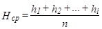
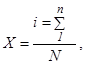
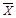
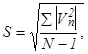
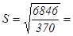

ВЕДОМСТВЕННЫЕ СТРОИТЕЛЬНЫЕ НОРМЫ
ИНСТРУКЦИЯ
ПО МОНТАЖУ
22-ЭТАЖНЫХ
КРУПНОПАНЕЛЬНЫХ ЖИЛЫХ ДОМОВ
ИЗ КОМПОНОВОЧНЫХ ОБЪЕМНО-ПЛАНИРОВОЧНЫХ
ЭЛЕМЕНТОВ (КОПЭ-85)
ВОЗВОДИМЫХ ДСК-2
ВСН 202-90
ОРДЕНА ЛЕНИНА ПРОЕКТНО-СТРОИТЕЛЬНОЕ ОБЪЕДИНЕНИЕ ГЛАВМОССТРОЙ МОССТРОЙКОМИТЕТА
"Инструкция" разработана лабораторией сборного домостроения НИИМосстроя (разделы 1, 3, 4, 6, 8, 10, 11 - зав. сектором Ю.Н. Домашенко, разделы 2 и 7 - старшим научным сотрудником И.С.Петровым, раздел 8 - зав. лабораторией, канд. техн. наук С.Ф.Бирулиным, ведущим инженером З.И.Глуховой, старшим научным сотрудником И.С. Петровым под руководством заместителя директора по научной работе канд. техн. наук Ф.С.Белавина), Домостроительным комбинатом № 2 ПСО Главмосстрой (зам. главного инженера Е.П. Благодетелевым, главным технологом Д.И.Кузичевым, начальником группы ПОР В.Г.Негуляевым и начальником отдела техники безопасности А.Н.Селиверстовым), мастерской № 20 Управления Моспроект-1 (гл. конструктором А.М.Пятецким) и трестом Мосоргстрой (раздел 5 - начальником отдела № 21 канд. техн. наук В.Д.Фельдманом и главным геодезистом А.С.Колгановым совместно c отделом № 5 - начальником отдела А.Н. Абрамовичем и главным технологом В.Ф. Обшиваловым).
"Инструкция" составлена в соответствии с требованиями глав СНиП (3.01.01-85; СНиП 3.01.03-84; СНиП 3.03.01-87; СНиП 3.08.01-85; СНиП 2.03.11-85; СНиП III-4-80* и др.), рабочих чертежей типовых секций (КТЖС), элементов блокировки (КЭБ) и альбомов деталей узлов проекта жилых домов системы КОПЭ-85, разработанных управлением Моспроект-1, и действующих Ведомственных строительных норм и инструкций.
С введением в действие ВСН 202-90 "Инструкция по монтажу 22-этажных крупнопанельных жилых домов из компоновочных объемно-планировочных элементов (КОПЭ-85), возводимых ДСК-2" утрачивает силу ВСН 202-83.
Ответственный редактор сборника В.И.Ферштер.
|
Ордена Ленина проектно-строительное объединение Главмосстрой Мосстройкомитета ______ Техническое управление |
Ведомственные строительные нормы |
ВСН 202-90 |
|
ИНСТРУКЦИЯ по монтажу 22-этажных крупнопанельных жилых домов из компоновочных объемно-планировочных элементов (КОПЭ-85), возводимых ДСК-2 |
Взамен |
1.1. "Инструкция" составлена в соответствии и в развитие Строительных норм и правил (СНиП); СНиП 3.01.01-85, СНиП 3.01-03-84, СНиП 3.03.01-87, СНиП 3.08.01-85, СНиП 2.03.11-85, СНиП III-4-80х и др. Распространяется на строительство 22-этажных крупнопанельных жилых домов из компоновочных объемно-планировочных элементов (КОПЭ-85), возводимых Домостроительным комбинатом № 2 МГОКД проектно-строительного объединения Главмосстрой Мосстройкомитета.
1.2. Монтаж сборных конструкций крупнопанельных жилых домов КОПЭ-85 производится по рабочим чертежам компоновочных типовых жилых секций (КТЖС), элементов блокировки (КЭБ), по альбомам деталей узлов 2ПДС, 2НДС, 2КДС и др., разработанным Управлением Моспроект-1, а также по проектам производства работ и технологическим картам.
1.3. При строительстве жилых домов КОПЭ-85 необходимо руководствоваться настоящей "Инструкцией", действующими СНиПами, нормативными материалами и инструкциями.
|
ВНЕСЕНЫ |
УТВЕРЖДЕНЫ Техническим управлением ПСО Главмосстрой "28" сентября 1990 г. |
СРОК ВВЕДЕНИЯ "26" октября 1990 г. |
2.1. Крупнопанельные жилые дома серии КОПЭ-85 состоят из компоновочных объемно-планировочных элементов (КОПЭ) и компоновочных элементов блокировки (КЭБ).
КОПЭ представляет собой незамкнутую часть типовых секций, из которых компонуются каталожные типовые жилые секции (КТЖС); из секций с помощью компоновочных элементов блокировки (КЭБ) образуются 22-этажные жилые дома различной протяженности и конфигурации в плане.
Типовые проекты 22-этажных жилых крупнопанельных домов серии КОПЭ-85 разработаны Управлением Моспроект-1 на основе объемно-планировочных элементов из изделий территориального каталога ТК-Г, предназначенных для массового строительства в Москве, осуществляемого ДСК-2 ПСО Главмосстрой.
2.2. В типовых проектах разработаны рядовые и поворотные КОПЭ с жилыми первыми этажами. Сочетание различных КОПЭ дает возможность получить 4 варианта секций: КТЖС-1, КТЖС-2, КТЖС-5 и КТЖС-9.
Для КТЖС-1, 2, 5 и 9 разработана номенклатура предприятий обслуживания населения для размещения их при привязке в первых нежилых этажах высотой 2,8 м.
Каждая типовая жилая секция состоит из трех КОПЭ: лестнично-лифтового КОПЭ-1 и двух жилых КОПЭ с набором одно-, двух-, трех- и четырехкомнатных квартир, расположенных в левой и правой частях секции. В жилых КОПЭ находятся по две квартиры (рис. 1).
Высота этажей - 2,8 м.
В домах предусмотрено современное инженерное оборудование, лифты и мусоропроводы.
Основные объемно-планировочные показатели КТЖС-1, 2, 5 и 9 приведены в табл. 1.
2.3. Конструктивная схема домов - несущие внутренние продольные и поперечные стены. Шаг поперечных стен - 3,6 м. Наружные стеновые панели - навесные. Панели перекрытий опираются на панели внутренних стен.
2.4. Подземная часть домов запроектирована с применением следующих конструкций:
Рис. 1. Типовая жилая секция КТЖС-1 (КОПЭ-2, КОПЭ-1, КОПЭ-3)
- фундаменты - свайные и монолитная железобетонная плита;
- внутренние несущие стены - из сборных бетонных панелей толщиной 180 и 220 мм;
- наружные стены цоколя - железобетонные трехслойные панели толщиной 250 и 280 мм;
- перекрытие - железобетонные плоские панели, размером "на комнату";
- входы в техническое подполье, крыльца и др. - сборные железобетонные элементы.
2.5. Надземная часть жилых домов решена с применением следующих конструкций:
- наружные стены - навесные трехслойные железобетонные панели на гибких связях с утеплителем из пенопласта. Общая толщина навесных панелей 350 мм (с учетом 100 мм ребер по контуру) и 280 мм (в торцевых стенах);
- внутренние несущие стены - бетонные плоские, размерами "на комнату", толщиной 220, 180 и 140 мм;
- панели перекрытий - сплошные плоские железобетонные, размером "на комнату", толщиной 140 мм с каналами для электропроводки;
- лестницы - из сборных железобетонных маршей и площадок толщиной 200 мм;
- перегородки - железобетонные толщиной 80 мм;
- шахты лифтов - из объемных железобетонных элементов высотой на этаж, с постоянными дверями в закрытом положении;
- санитарные узлы - из полностью отделанных и оборудованных на заводе унифицированных объемных кабин;
- блоки инженерных коммуникаций - гипсобетонные высотой на этаж на железобетонном поддоне с различными каналами;
- вентблоки - гипсобетонные, высотой на этаж;
- электропанели - железобетонные, самонесущие, высотой на этаж;
- лоджии и балконы - из сборных железобетонных плит. Ограждения лоджий и балконов - из железобетонных экранов;
- крыша - плоская из сборных элементов, с теплым чердаком и внутренним водостоком.
2.6. Стыки панелей перекрытий с внутренними и наружными несущими стенами приняты платформенного типа на цементном растворе с толщиной шва 10 и 20 мм.
Таблица 1
Основные объемно-планировочные показатели каталожных типовых жилых секций КТЖС
|
Объем строительный, м3 |
Площадь, м2 |
Кол-во квартир, шт. |
Расчетн. числен. жителей, чел. |
||||||
|
здания |
в т. ч. подземной части |
застройки |
жилая |
общая |
приведенная общая |
||||
|
КТЖС-1 |
КЭБ-1,1 |
23268 |
836 |
348 |
2874 |
4943 |
5045 |
86 |
256 |
|
КЭБ-1,7 |
23421 |
-"- |
350 |
2828 |
4897 |
4998 |
-"- |
-"- |
|
|
КЭБ-1,6 |
23421 |
-"- |
-"- |
2830 |
4899 |
5000 |
-"- |
-"- |
|
|
КТЖС-2 |
КЭБ-1,2,3 |
23701 |
849 |
355 |
2960 |
5023 |
5105 |
-"- |
236 |
|
КЭБ-2,3,7 |
23854 |
-"- |
356 |
2914 |
4977 |
5058 |
-"- |
-"- |
|
|
КЭБ-1,3,3 |
23783 |
-"- |
-"- |
2935 |
4998 |
5080 |
-"- |
-"- |
|
|
КТЖС-5 |
КЭБ-1,2,3 |
27993 |
1004 |
419 |
3634 |
6202 |
6285 |
-"- |
356 |
|
КЭБ-2,3,6 |
28146 |
-"- |
422 |
3590 |
6158 |
6240 |
-"- |
-"- |
|
|
КЭБ-1,3,3 |
28075 |
-"- |
421 |
3608 |
6176 |
6259 |
-"- |
-"- |
|
|
КТ2С-9 |
КЭБ-2,2 3,3 |
28426 |
1017 |
426 |
3720 |
6282 |
6348 |
-"- |
334 |
|
КЭБ-2,3 3,3 |
28508 |
-"- |
427 |
3695 |
6257 |
6323 |
-"- |
-"- |
|
Примечание. Все показатели даны для варианта проекта со сквозным проходом на первом этаже.
2.7. Вертикальные стыки панелей наружных стен выполняются открытого типа с водоотбойной лентой, а также закрытого типа (в лоджиях) с герметизацией стыков мастикой.
Горизонтальные стыки панелей наружных стен - открытого типа, за исключением балконов и лоджий, где стыки закрытого типа.
2.8. Монтаж сборных элементов конструкций и заделка стыков между ними осуществляется на цементном растворе М200 в соответствии с проектом.
2.9. Все соединения конструктивных сборных элементов выполняются на сварке с применением металлических связей в соответствии с рабочими чертежами альбомов деталей узлов проекта (2НДС-88, 2 КДС-83 и др.).
Перечень основных комплектов рабочих чертежей для домов КОПЭ приведен в приложении 2 настоящей "Инструкции".
3.1. Изготовление основных сборных элементов и монтаж надземной части крупнопанельных жилых домов системы КОПЭ-85 выполняется Домостроительным комбинатом № 2 ПСО Главмосстрой. Санитарно-технические кабины, блоки инженерных коммуникаций, вентиляционные блоки и панели покрытия с безрулонной кровлей поставляются Домостроительным комбинатом № 1.
Работы нулевого цикла, включая монтаж подземной части зданий, выполняются трестами Мосфундаментстрой и другими специализированными организациями ПСО Главмосстрой.
3.2. Сборные элементы для подземной части домов изготавливаются и комплектно поставляются на строительные площадки Домостроительным комбинатом № 2 и заводами ППО Главмоспромстройматериалы.
3.3. Доставку сборных деталей домов с заводов ЖБК комбинатов на строительные площадки следует осуществлять по транспортно-монтажным часовым графикам транспортными средствами Мосстройтранса под оперативным руководством Домостроительного комбината № 2.
3.4. За основу организации строительства 22-этажных крупнопанельных жилых домов этого типа приняты следующие основные положения:
поточность строительства;
монтаж сборных элементов подземной и надземной частей домов по часовым графикам с транспортных средств, исключая дополнительную разгрузку и складирование основных изделий на площадке;
комплектация и централизованная поставка через комплектовочную базу всех материалов и изделий в специальных контейнерах по графикам на каждый объект непосредственно на рабочее место;
максимальное совмещение работ по монтажу сборных конструкций с внутренними общестроительными и специальными работами, включая монтаж лифтов и отделочные работы.
3.5. Монтаж сборных элементов надземной части жилых домов производится Домостроительным комбинатом № 2 непосредственно с транспортных средств по часовым транспортно-монтажным графикам.
3.6. Пообъектные транспортно-монтажные часовые графики составляются АСУС на основе типовых нормативов, учитывающих прогрессивную технологию возведения зданий и разработанных Проектным институтом крупнопанельного домостроения (ПИ КПД) ПСО Главмосстрой в соответствии с типовой технологической последовательностью монтажа конструкций, предусмотренной проектом производства работ, и согласовываются с диспетчерской службой ДСК-2 и Автокомбинатом № 1.
Комплектующие материалы и изделия, необходимые в процессе монтажа и в послемонтажный период, а также трубные заготовки и приборы инженерного оборудования должны поставляться по суточным графикам комплектно в контейнерах в соответствии с графиком монтажа основных конструкций здания под контролем диспетчерской службы ДСК-2.
3.7. Сроки выполнения монтажных и других работ по домам данной серии устанавливаются на основании типового решения продолжительности работ по секциям, принятого календарным планом проекта производства работ, и количества блок-секций в доме.
3.8. Для обеспечения своевременной подготовки фронта и условий для поточного производства работ все работы по возведению жилых домов этого типа разделяются на три основных этапа (кроме подготовительного периода):
нулевой цикл, включая устройство подземной части здания;
надземная часть здания;
отделочные работы.
На каждом этапе строительства продолжительность выполнения и степень совмещения работ устанавливается проектом производства работ.
3.9. К монтажу конструкций подземной части здания следует приступать после выполнения всего комплекса земляных работ, разбивки осей, устройства и приемки свайного основания или монолитных фундаментов.
3.10. До начала работ по возведению надземной части жилого дома должны быть полностью закончены все работы подготовительного и нулевого цикла для данного объекта, включая прокладку подземных коммуникаций, произведена планировка прилегающей территории, выполнены постоянные или временные дороги из сборных железобетонных плит, проложены рельсовые пути башенного крана и установлены необходимые передвижные бытовые помещения, располагаемые вне зоны работы монтажного крана, и полностью закончены монтаж и приемка смонтированных конструкций подземной части здания.
3.11. При возведении многоэтажных жилых домов основным методом производства работ для объектов в целом и внутри здания является поточный метод, обеспечивающий равномерную сдачу домов в эксплуатацию в течение года, рациональное использование монтажных механизмов и приспособлений, повышение качества и снижение стоимости строительства.
Выполнение послемонтажных общестроительных, санитарно-технических, электромонтажных и отделочных работ, монтаж лифтов и систем незадымляемости следует производить в технологической последовательности и в ритме монтажа конструкций.
Установку встроенной мебели (шкафов, антресолей и др.), как правило, следует выполнять в процессе отделочных работ, после окраски потолков, оклейки стен обоями и настилки полов.
Взаимная увязка различных видов работ осуществляется в соответствии с календарным графиком проекта производства работ.
3.13. Для совмещенного выполнения монтажных, общестроительных и специальных работ на корпусе и для безопасного их производства этажи разбиваются на захватки с одинаковыми сроками выполнения работ на них.
За оптимальную захватку принимается одна секция. Количество одновременно монтируемых секций одним монтажным потоком, исходя из условий технологичности монтажа конструкций, трудоемкости, сроков производства работ, обеспечения высокого качества работ и равномерного ввода объектов в эксплуатацию не должно превышать четырех. При монтаже многосекционных жилых домов этого типа разбивка их на потоки должна производиться с учетом этого фактора (не более четырех секций на поток), причем поток от потока должен отделяться глухим торцом, что позволяет вводить в эксплуатации многосекционные дома отдельными частями.
3.14. Внутренние общестроительные и специальные работы, совмещенные с монтажом конструкций здания, следует производить с некоторым отставанием от монтажных работ в соответствии с проектом производства работ и совмещенным графиком.
При этом внутренние работы и монтаж конструкций по требованиям техники безопасности всегда должны производиться на разных захватках, так как не допускается одновременное выполнение этих работ по одной вертикали независимо от количества смонтированных перекрытий (см. раздел 10, п. 10.37-10.39).
3.15. Монтаж конструкций и другие строительно-монтажные работы следует осуществлять, как правило, в три смены, а специальные - в одну или две смены.
При совмещении монтажных и отделочных работ последние следует выполнять только в первую-вторую смены на захватках (секциях), над которыми не производится монтаж конструкций.
3.16. Все общестроительные, монтажные и специальные работы должны выполняться комплексными строительно-монтажными и специализированными бригадами и звеньями, обеспечивающими одинаковую продолжительность работ на захватках.
В состав монтажного потока по расчету нормативно-исследовательской станции ДСК-2 должны входить комплексная строительно-монтажная бригада, включающая монтажников конструкций, электросварщиков, бетонщиков, изолировщиков, плотников, штукатуров, машинистов башенного крана и др., а также дежурные транспортные рабочие, слесари и электромонтеры. Бригады электромонтажников, слесарей-сантехников и отделочников выделяются в отдельные специализированные потоки для более квалифицированного контроля качества и руководства выполняемых работ.
При монтаже конструкций звено монтажников должно включать не менее трех монтажников конструкций, такелажника (стропальщика), электросварщика и дежурного электромонтера, а при монтаже панелей наружных стен в составе звена должен быть еще и изолировщик для герметизации стыков.
Для рационального использования рабочего времени членов комплексной бригады рекомендуется совмещение профессий.
3.17. Монтаж конструкций подземной части домов этого типа рекомендуется производить кранами на рельсовом ходу, предназначенными для выполнения работ нулевого цикла, а монтаж надземной части зданий - башенными кранами с необходимыми параметрами (например КБ-676.2, КБ-674А-9 и др.).
Рекомендуемые для монтажа жилых домов этой серии типы кранов и их основные параметры приведены в разделе 8 настоящей "Инструкции".
Установку тяжелых башенных кранов следует производить на нижнее строение рельсовых путей, выполняемое по специальному проекту, разрабатываемому ПИ КПД, трестом Мосоргстрой или СКВ Мосстрой.
3.18. многосекционные здания длиной более четырех секций (в зависимости от количества секций, их типа и расположения в плане) следует монтировать двумя или более башенными кранами, расположенными, по возможности, со стороны главного фасада.
При монтаже здания несколькими башенными кранами или при примыкании монтируемой части здания к ранее построенной должны учитываться специальные требования по повышению безопасности работ, предусмотренные проектом производства работ.
Так как кабина башенного крана находится на большой высоте, между крановщиком, такелажником и монтажниками должна быть устроена надежная радиосвязь либо громкоговорящая связь или же организована в исключительных случаях сигнализация флажками.
В связи с применением для монтажа жилых домов этого типа тяжелых башенных кранов и возможных просадок грунта не допускается установка их на проложенные инженерные коммуникации.
3.20. Рельсовые пути башенных кранов для монтажа жилых домов этой серии следует устраивать из инвентарных железобетонных балок (для кранов с 16-ходовыми колесами). Устройство рельсовых путей, их заземление и эксплуатация производятся в соответствии с требованиями СНиП 3.08.01-85 "Рельсовые пути башенных кранов".
На концах рельсовых нитей должны быть установлены и закреплены четыре инвентарных тупиковых упора на расстоянии не менее 0,5 м от концов рельсов при железобетонных балках.
Рельсовые пути следует ограждать инвентарными временными ограждениями высотой не менее 1,2 м согласно проекту производства работ. При установке башенного крана на эстакаду нижнего строения пути, состоящего из двух и более рядов фундаментных блоков по высоте, временного ограждения кранового пути не требуется.
При эксплуатации крана следует вести постоянное наблюдение за состоянием рельсового пути.
Грузопассажирские подъемники должны устанавливаться до начала монтажа 6-го этажа и наращиваться по ходу возведения здания, обеспечивая подъем рабочих и грузов на монтируемые этажи.
Грузовые подъемники устанавливаются в сроки, определяемые проектом производства работ на отделочные работы.
Площадки вокруг установленных подъемников ограждаются инвентарными ограждениями.
При установке подъемников и их эксплуатации запрещается нарушать конструкции оконных блоков. Одновременная работа подъемника и башенного крана на одной захватке не допускается.
Работа подъемников и башенного крана на каждом монтируемом доме должна быть строго регламентирована в проекте производства работ.
3.22. При разработке проектов производства работ для установки и безопасной эксплуатации грузоподъемных кранов, строительных подъемников и устройства приобъектной строительной площадки следует руководствоваться положениями "Указаний при установке и безопасной эксплуатации грузоподъемных кранов и строительных подъемников при разработке проектов производства работ" (Мосстройкомитет, ПКТИпромстрой, 1990 г.)
3.23. На стройгенплане каждого монтируемого дома, разрабатываемого в соответствии со СНиП 3.01.01-85 "Организация строительного производства" (Приложение 4), должно быть показано расположение:
постоянных и временных дорог и площадок для стоянки панелевозов во время разгрузки; направление движения автотранспорта;
монтажных кранов, грузопассажирских и грузовых подъемников, подкрановых путей и их инвентарных ограждений, а также границы опасных зон;
площадок для складирования строительных материалов, сборных изделий и оборудования, а также для расстановки контейнеров с изделиями и материалами;
необходимых для каждого потока инвентаря, оборудования и монтажной оснастки;
временных сооружений, а также их перечень;
временного ограждения стройплощадки, осветительных мачт, щитов с противопожарным инвентарем и др.
Территория строительной площадки должна быть ограждена временным инвентарным забором. На площадке должны быть вывешены необходимые предупредительные знаки. Площадки для складирования строительных материалов и деталей следует очистить от мусора, хорошо спланировать с учетом отвода поверхностных вод и утрамбовать. Складская площадка должна располагаться не ближе 1,0 м от ограждения подкранового пути. Территория площадки, проходы, проезды и рабочие места в темное время суток должны быть освещены в соответствии с требованиями ГОСТ 12.01.046-85. Освещение рабочих мест на захватках обеспечивается прожекторами, установленными на поэтажных прожекторных вышках, а освещение складской площадки, проходов и проездов - прожекторами, установленными на инвентарных мачтах.
3.25. Для размещения рабочих и инженерно-технических работников во время строительства необходимо использовать типовые инвентарные временные сооружения (передвижные вагончики), располагаемые в соответствии со стройгенпланом.
Битовые временные помещения должны располагаться вне опасной зоны работы крана на специально отведенной площадке (см. раздел 10, п. 10.58).
3.26. Для транспортировки изделий и материалов на строительные площадки необходимо, как правило, использовать постоянные дороги и проезды, или устраивать временные дороги из сборных железобетонных дорожных плит. Ширина дорог должна быть не менее 3,5 м при одностороннем движении и не менее 6,0 м при двухстороннем, с радиусом закругления дорог, 12-18 м, в зависимости от габаритов транспортных средств.
При устройстве дорог и площадок необходимо предусматривать возможность завоза, монтажа и демонтажа применяемых для монтажа домов башенных кранов.
В местах разгрузки панелевозов у монтируемого корпуса при сквозном проезде необходимо устраивать из сборных железобетонных плит уширение дороги до 9 м длиной 20-30 м, а при отсутствии сквозного проезда - дополнительную площадку из сборных плит для разворота и стоянки автотранспорта, рассчитанную для одновременной стоянки трех отцепных панелевозов.
Временные дороги и площадки из инвентарных железобетонных дорожных плит следует устраивать до начала основных работ по строительству жилого дома с учетом возможности завоза и монтажа используемых монтажных кранов.
При выполнении отделочных и специальных работ внутри здания строительный мусор удаляют с этажей с помощью тележки на пневмоходу вместимостью 0,12 м3 (чертеж № 2751 СКВ Мосстрой) опускают вниз подъемником и разгружают в бункер-накопитель (БН-2).
Запрещается сбрасывать строительный мусор и отходы (с высоты более 3 м) с перекрытий через окна, балконы и лоджии, а также с крыши (см. п. 10.51).
4.1. При монтаже крупнопанельных жилых домов системы КОПЭ-85 используются сборные изделия "Территориального каталога унифицированных индустриальных изделий для строительства в г. Москве", отвечающие требованиям ГОСТов и соответствующих Техническим условиям на их изготовление.
Контроль качества и точности изготовления изделий осуществляется ОТК заводов-изготовителей. На изделиях должен стоять штамп ОТК завода, подтверждающий соответствие изделий требованиям ГОСТов и Технических условий.
Кромки панелей наружных стен в местах, предусмотренных чертежами изделий и узлов проекта, должны быть покрыты на заводе грунтовочным герметизирующим составом (мастикой 51Г-18 или другими составами) в соответствии с проектом. Грунтовка должна образовывать сплошную пленку.
4.2. Сборные изделия, поставляемые на строительную площадку, проверяются инженерно-техническими работниками строящегося объекта: установлением соответствия паспортных данных проектным и визуально. Изделия должны иметь паспорт, хорошо видимую маркировку и штамп ОТК завода с датой изготовления, нанесенные несмываемой краской.
Изделия, качество которых при внешнем осмотре вызывает сомнение, контролируют более тщательно, проверяя соответствие качества изделия требованиям ГОСТа или Технических условий.
4.3. При приемке сборных элементов особое внимание следует обращать на отсутствие трещин и повреждений (околов), наличие и правильное расположение отверстий, закладных деталей и подъемных петель, на качество поверхностей изделий и соответствие цвета поверхности наружных панелей утвержденному эталону. Необходимо также проверять наличие антикоррозионных покрытий на открытых поверхностях закладных стальных деталей, предусмотренных проектом.
Подъемные петли должны быть без разрывов и других изъянов и соответствовать проекту по марке стали, размерам и положению в изделии.
4.4. При обнаружении дефектов, превышающих установленные допуски, необходимо вызвать представителя ОТК завода и составить акт о выбраковке изделия. Забракованные при приемке изделия должны быть немедленно заменены заводом-изготовителем.
4.5. Транспортировку и складирование сборных изделий следует производить в соответствии с требованиями ГОСТов и Технических условий на эти изделия.
При транспортировании и складировании панелей наружных стен в целях предохранения от повреждения зуба, выступающего из нижней грани, необходимо:
- панели опирать на деревянные продольные бруски или прокладки размером не менее 500х200х100 мм (100 - высота h), располагаемые под центрами простенков;
- в панелях без проемов ставить по две такие прокладки, располагаемые по линии подъемных петель.
Панели наружных стен с готовыми отделанными поверхностями при транспортировании и складировании следует предохранять от загрязнения, а гипсобетонные изделия (вентблоки, блоки инженерных коммуникаций, сантехнические кабины и др.) необходимо защищать от увлажнения. Необходимые меры, предупреждающие загрязнение отделанных поверхностей и увлажнение изделий при транспортировании, должны согласовываться между ДСК-2 и Мосстройтрансом.
4.6. Сборные изделия должны комплектоваться на заводах-изготовителях на транспортные средства с учетом принятой в проекте производства работ технологической последовательности монтажа. Доставка всех сборных элементов обеспечивается транспортными средствами специального технологического транспорта.
4.7. Строповка элементов конструкций на строительной площадке должна производиться по типовым схемам строповок изделий с применением грузозахватных приспособлений, предусмотренных проектом производства работ. Типовые схемы строповки изделий, контейнеров и инвентаря должны быть вывешены на стройплощадке на видном месте на специальном стенде.
4.8. Погрузочно-разгрузочные работы необходимо выполнять под руководством ответственных инженерно-технических работников за безопасное производство работ по перемещению грузов кранами. Они обязаны следить за применением безопасных способов производства погрузочно-разгрузочных работ, исправным состоянием грузозахватных приспособлений, тары и складского инвентаря, правильным размещением элементов на складе и сохранностью их при складировании и подъеме для монтажа.
4.9. К строповке элементов допускаются только лица, имеющие удостоверение на право производства этого вида работ. Запрещается подмена такелажников (стропальщиков) неподготовленными рабочими, в том числе монтажниками без удостоверения стропальщика. Такелажник, работающий на разгрузке и строповке изделий, должен иметь отличительный- знак - нарукавную желтую повязку иди куртку и каску оранжевого цвета.
Такелажник перед подъемом детали обязан проверить ее качество (состояние подъемных петель, отсутствие трещин, околов кромок и пр.) и удостовериться в безопасности подъема. При обнаружении дефектов в изделиях такелажник обязан немедленно сообщить об этом мастеру (производителю работ).
- контейнеров с малогабаритными изделиями, элементами и материалами;
- контейнеров для монтажных приспособлений, ларей для инструмента, закладных деталей и вяжущих материалов, емкостей для воды и сухой смеси и другого инвентаря;
- складов-пирамид для хранения необходимого запаса стеновых панелей и перегородок в пределах до 10% сменной потребности;
- площадок для приготовления раствора из сухих смесей, приема раствора и бетона и хранения изделий, грузозахватных приспособлений и др.
Площадка должна быть очищена от мусора, тщательно спланирована с учетом отвода поверхностных вод, уплотнена, а в зимнее время ее следует регулярно очищать ото льда и снега.
4.11. При складировании изделий на приобъектной площадке должны соблюдаться следующие требования:
- складирование сборных изделий следует производить раздельно по видам и маркам;
- раскладка изделий должна производиться с учетом последовательности их монтажа. Изделия, имеющие большую массу или парусность, должны размещаться ближе к монтажному крану;
хранение изделий должно производиться в условиях, исключающих возможность их деформирования и загрязнения, а также просадку грунта в период оттаивания.
При хранении изделий в горизонтальном положении в штабелях нижний ряд изделий следует укладывать на деревянные подкладки, уложенные по выровненному основанию; прокладки всех вышележащих рядов должны быть расположены по одной вертикали одна над другой по линии подъемных петель. Размеры прокладок не должны допускать повреждения выступающих частей конструкций и подъемных петель нижерасположенных изделий, и должны быть больше их высоты не менее чем на 20 мм. Складирование изделий без подкладок и прокладок не разрешается.
Ширина проходов между штабелями изделий, складами-пирамидами и контейнерами должна быть не менее 1 м.
Изделия следует размещать так, чтобы их заводская марка была видна со стороны прохода или проезда, а монтажные петли изделий были свободными для строповки.
При погрузке и разгрузке панелей в склады-пирамиды следует обеспечивать равномерную загрузку панелей с обеих сторон пирамид во избежание ее опрокидывания.
Для строповки и расстроповки изделий и инвентаря на приобъектной площадке следует пользоваться специальной лестницей высотой 1,2 м или монтажным столиком.
Прислонять изделия к заборам, элементам временных или капитальных сооружений не допускается.
При складировании изделий и материалов необходимо соблюдать требования "Указаний по приемке, складированию, хранению и транспортировке основных строительных материалов и изделий на базах трестов комплектации и УПТК строительных организаций Главмосстроя" (ВСН 212-85, Главмосстрой).
4.12. В проектах производства работ необходимо приводить полные перечни монтажной оснастки, грузозахватных приспособлений и инвентаря для выполнения всех монтажных и такелажных работ, а также типовые схемы строповок изделий, контейнеров и инвентаря, принятых для домов данного типа.
4.13. До начала монтажа сборных конструкций необходимо:
- оснастить строительную площадку монтажными и такелажными приспособлениями и инвентарем, предусмотренными проектом производства работ и испытанными в соответствии с действующими Техническими правилами;
- завершить устройство подкранового пути и подготовить монтажный кран к эксплуатации;
- закончить устройство дорог, проездов и площадки для отцепных панелевозов для доставки на стройплощадку сборных изделий и материалов;
- обеспечить наличие на объектах полного перечня проектной документации, проектов производства работ, необходимых инструкций и нормативных документов, а также журналов работ, журналов по контролю качества работ и техники безопасности. Подготовить папку с комплектами актов на скрытые работы и поэтажной приемки;
- инженерно-техническим работникам стройки детально изучить проектную документацию и ознакомить членов комплексной бригады с рабочими чертежами, проектом производства работ и технологическими картами;
- оформить приказы на ответственных лиц (за безопасное производство работ по перемещению грузов кранами, за исправное состояние съемных грузозахватных приспособлений и тары, за электрохозяйство и др.).
4.14. При монтаже сборных конструкций в соответствии с решениями проекта производства работ необходимо обеспечить:
последовательность монтажа и установки удерживающих смонтированные элементы приспособлений, которые обеспечивают устойчивость и геометрическую неизменяемость смонтированной части здания на всех стадиях монтажа, и прочность монтажных соединений в соответствии с проектом;
комплектность установки конструкций, позволяющую производить на смонтированной части здания (захватке, этаже) последующие работы;
безопасность монтажных, общестроительных и специальных работ на объекте с учетом выполнения их по совмещенному графику.
4.15. Перед подъемом монтажных элементов конструкций необходимо:
проверить соответствие их проектной марке;
очистить изделия от грязи, зимой - от наледи и снега, а металлические закладные детали - от наплыва бетона и ржавчины;
проверить правильность расположения монтажных петель и других закладных металлических изделий;
проверить правильность и надежность строповки каждого подаваемого к монтажу элемента.
4.16. Изделия необходимо поднимать с помощью инвентарных грузозахватных приспособлений (траверс, стропов, захватов и др.), которые крепятся за все подъемные петли в соответствии со схемами строповок, указанными в проекте производства работ.
Строповку панелей из складов-пирамид следует выполнять последовательно, начиная с крайних рядов.
Строповка элементов конструкций должна обеспечивать их подачу к месту монтажа в положении, близком к проектному.
4.17. При монтаже сборных элементов конструкций необходимо:
- поднимать и перемещать монтируемые элементы плавно, без рывков, раскачивания и вращения;
- подъем конструкций осуществлять в два приема: сначала на высоту 20-30 см, а дальнейший подъем - после проверки надежности строповки;
- не допускать толчков и ударов монтируемого элемента по другим ранее установленным конструкциям;
- поданные к месту установки сборные элементы, контейнеры и инвентарь опускать и принимать на высоте не более 1 м, а наводить на высоте 30 см от уровня их установки в проектное положение;
- устанавливать элементы непосредственно на опорные места по принятым ориентирам (рискам и др.) в соответствии с принятыми допусками;
- не освобождать устанавливаемый элемент от крюка монтажного крана до надежного постоянного или временного закрепления;
- до окончательного закрепления тщательно выверить правильность установки конструкций и привести их в проектное положение;
- освобождать установленные элементы от временных креплений только после постоянного их закрепления, предусмотренного проектом;
- не допускать смещения установленных элементов после выверки их положения и снятия стропов.
4.18. Устройство постоянных соединений сборных элементов, осуществляемых при помощи монтажных металлических накладок (связей) на электросварке, должно выполняться сразу за монтажом конструкций. Запрещается крепление монтируемых элементов на электроприхватках.
Запрещается оставлять после окончания смены на временных креплениях конструкции, закладные детали которых подлежат электросварке, за исключением отдельных случаев, предусмотренных проектом производства работ или технологическими картами.
4.19. Соединение элементов конструкций здания необходимо выполнять в соответствии с рабочими чертежами узлов проекта и технологическими картами.
Не разрешается вносить какие-либо изменения в конструкцию узлов примыканий, а также допускать применение подкладок, прокладок или вставок, не предусмотренных чертежами, без предварительного согласования с проектной организацией.
4.20. До устройства постоянных креплений элементов следует проверять правильность установки элементов конструкций и положения соединяемых деталей в соответствии с проектом.
4.21. Сварочные работы необходимо выполнять в строгом соответствии с рабочими чертежами узлов проекта и требованиями СНиП 3.03.01-87 "Несущие и ограждающие конструкции", ГОСТ 5264-80, а также в соответствии с "Технологическими указаниями по сварке основных несущих конструкций жилого дома серии КОПЭ", разработанными трестом Мосоргстрой, 1987 г.
Эти работы должны производиться квалифицированными электросварщиками, имеющими соответствующие удостоверения.
Применяемые электроды типа Э-46 должны удовлетворять требованиям ГОСТ 9466-75 и ГОСТ 9467-75 и иметь целое неотслоившееся сухое покрытие.
Качество сварных соединений должно систематически контролироваться, и обнаруженные дефекты швов должны быть устранены удалением бракованного металла с последующей заваркой и контролем качества наложенных швов.
Качество выполняемых сварочных работ должно регулярно фиксироваться ИТР стройки в специальном журнале сварочных работ.
4.22. В конструкциях наружных ограждений, лоджий и балконов, включая конструкции крыши и машинных помещений лифтов, долговечность сварных соединений сборных элементов между собой и с элементами внутренних конструкций, примыкающими в наружных стыках, должна обеспечиваться специальными мерами по антикоррозионной защите в соответствии с требованиями СНиП 2.03.11-85 "Защита строительных конструкций от коррозии", "Инструкцией по проектированию и производству противокоррозионной защиты стальных связей полносборных жилых, общественных и культурно-бытовых зданий с нормальными температурно-влажностными условиями эксплуатации" (ВСН 141-77, Главмосстрой, 1977) и "Указаниями по восстановлению после сварки противокоррозионной защиты стальных связей панелей комбинированным покрытием" (ВСН 106-75, Главмосстрой, 1975).
Металлические монтажные связи, а также закладные детали, находящиеся непосредственно в стыках элементов наружных ограждений и входящие в состав сварных соединений панелей наружных стен с внутренними несущими стенами и между собой, панелей перекрытий у наружных стен, а также элементов входов, лоджий, балконов, крыши и машинных помещений лифтов, должны иметь антикоррозионное цинковое покрытие.
Оцинкованные монтажные связи и закладные детали имеют марку с индексом "Ц". Толщина слоя цинковых покрытий в узлах балконов, лоджий и козырьков должна быть не менее 0,12 мм, а в стыках наружных стен не менее 0,05 мм.
Все места сварных оцинкованных соединений сборных элементов в указанных выше узлах, включая закладные и соединительные детали, после приемки соединений должны быть защищены от коррозии цинковым протекторным грунтом (на лаке ХВ-784 или других марок, обеспечивающих качественное покрытие), согласно ВСН 141-77 и ВСН 106-75 Главмосстроя и СНиП 2.03.11-85 и тщательно заделаны цементным раствором.
На монтаже после сварочных работ и подготовки поверхности металла цинковый протекторный грунт наносят на поверхности сварного узла после соответствующей зачистки и обезжиривания. Толщина слоя протекторного грунта должна быть не менее 0,12-0,15 мм (при замере на сварном шве). Сварные узлы, оцинкованные слоем 0,12 мм, окрашивают только в зоне сварного шва, а оцинкованные слоем 0,05 мм - по всей поверхности, доступной для окраски.
4.23. Электросварка соединений должна непрерывно следовать за монтажом конструкций и до замоноличивания все сварные соединения следует поэтажно сдавать техническому и авторскому надзору.
4.24. После приемки, до окончания работ на данном монтажном горизонте все места сварных соединений с утопленными закладными деталями, включая металлические связи, должны быть тщательно защищены цементным раствором марки не ниже 100 с толщиной слоя не менее 20 мм в соответствии с решением узлов проекта.
4.25. При монтаже конструкций размеры горизонтальных и вертикальных стыков и толщина швов между сборными элементами, а также их заделка должны соответствовать и выполняться согласно решениям узлов проекта.
Марка бетона и раствора должны соответствовать проектным.
Раствор следует расстилать на опорные поверхности сплошным слоем непосредственно перед монтажом элементов и плотно обжимать в горизонтальных стыках под действием устанавливаемых элементов.
При монтаже сборных элементов следует не допускать образования пустых или частично не заполненных швов. При наличии таких мест на небольших участках швов их необходимо тщательно подчеканить свежим раствором в процессе монтажа элемента.
После окончания монтажа элементов выдавливаемые из горизонтальных швов излишки раствора следует зачищать заподлицо с лицевыми поверхностями монтируемых элементов.
4.26. Для монтажа сборных элементов и заделки стыков следует применять пластичный цементный раствор, приготовляемый непосредственно на объекте из готовых сухих смесей, или раствор, приготовляемый централизованно и доставляемый на объекты специализированным автотранспортом.
Приготовление раствора на строительных площадках следует производить на инвентарных растворных узлах.
Раствор, применяемый при монтаже сборных элементов, должен быть пластичным, удобоукладываемым (подвижность раствора характеризуется глубиной погружения на 7-6 см в раствор стандартного конуса). Раствор следует использовать до начала схватывания и не более чем через два-три часа после приготовления.
Применение раствора, процесс схватывания которого уже начался, а также восстановление его пластичности путем добавления воды не допускаются.
4.27. Монтаж панелей несущих внутренних стен, объемных элементов шахт лифтов, опорных рам и стенок чердака и др. следует производить по маякам и по заранее вынесенным на перекрытие ориентирным рискам (см. раздел 5).
Маяки из цементного раствора или гипса устанавливают по нивелиру в соответствии с отметками монтажного горизонта.
4.28. Выступающие подъемные петли в сборных элементах после монтажа конструкций срезаются заподлицо с поверхностью изделий. Подъемные петли, находящиеся в лунках, не срезаются и лунки заделываются цементным раствором. Гнезда заделываются в соответствии с решениями узлов проекта.
При монтаже элементов, имеющих каналы (вентблоки, электроблоки, блоки инженерных коммуникаций), необходимо принимать меры, для предохранения каналов от попадания в них раствора при укладке его в стыках.
4.29. Особое внимание необходимо уделять правильному в соответствии с проектом и качественному заполнению стыков между стеновыми панелями, панелями покрытия, а также между другими сборными элементами; при этом необходимо обеспечивать требуемую плотность, непродуваемость и водонепроницаемость стыков.
Герметизацию стыков элементов наружных ограждений следует производить тщательно в соответствии с решениями рабочих чертежей узлов проекта и требованиями "Инструкции по технологии заделки стыковых соединений панелей наружных стен зданий соцкультбыта и жилых домов из изделий производства НПО "Моспромстройматериалы" (ВСН 242-89, Мосстройкомитет, 1990), а также в соответствии с положениями настоящей "Инструкции" (раздел 7).
4.30. При монтаже 1-5-го этажей должна быть обеспечена повышенная точность в соосности вертикальных панелей и размерах горизонтальных швов. Заполнение горизонтальных швов между панелями перекрытий, а также панелями внутренних несущих стен в этих уровнях должно быть выполнено особо тщательно. Швы перед заполнением следует очистить от мусора и пыли (в зимнее время продуть горячим воздухом). Для монтажа панелей и заполнения швов разрешается применять только свежеприготовленный пластичный раствор. Все указанные работы подлежат обязательному актированию как скрытые работы с участием авторского надзора.
5.1. Для выноса в натуру и закрепления на местности положения строящегося здания в плане и по высоте заказчик обязан создать разбивочную основу (РО) для строительства и внешнюю разбивочную сеть (ВРС) (рис. 2).
5.2. Не менее чем за 10 дней до начала строительно-монтажных работ заказчик обязан передать генподрядчику техническую документацию на РО и ВРС и закрепленные на площадке строительства пункты и знаки этой основы, в том числе:
точки красных линий или др. линии регулирования застройки;
точки красных линий, закрепляющие квадраты со сторонами 50, 100, 200 м или другие виды геодезических сетей;
реперы в количестве не менее 2-х, расположенных по разные стороны от здания (Rр1 и Rр2, рис. 2).
5.3. Для сохранности знаков места их расположения необходимо оградить деревянными ограждениями (рис. 3а) или другими видами ограждений.
5.4. Пункты ВРС следует закреплять бетонными знаками. Конструкция знаков закрепления приведена на рис. 3б.
Примечание. В процессе строительства знаки должны сохраняться. Передача их в натуре и по акту субподрядным организациям должны производиться геослужбами трестов фундаментостроения.
5.5. Геодезические работы по созданию РО и ВРС следует выполнять с указанной ниже точностью.
Величины средних квадратических погрешностей (т) построения РО:
угловые измерения £10";
линейные измерения ³1:5000;
определение превышения на 1 км хода £. 10 мм.
При построении ВРС и внутренних разбивочных сетей исходного и монтажного горизонтов:
угловые измерения £10";
линейные измерения ³1:10000;
определение превышений на станции £ 2 мм.
Рис. 2. Схема размещения разбивочной сети:
1 - знак постоянного закрепления створа оси на местности; 2 - знак закрепления отметок, совмещенный со знаком закрепления оси; 3 - знак временного закрепления створа оси; 4 - пункты государственной геодезической сети
Рис. 3. Грунтовой знак закрепления осей:
а) деревянное ограждение; б) конструкция знаков закрепления; 1 -
деревянная крышка; 2 - металлическая пластина размером 200´200´10
мм; 3 - бетон класса В7, 5; 4 - металлическая труба диаметром 30 мм; 5 -якорь;
6 - песок
Рис. 4.
Маркировка осей и отметок на конструкциях:
1 -
карандашная риска; 2 - трудносмываемая откраска
Значения погрешностей передачи точек осей по высоте:
при высоте проектирования осей до 15 м £ 2 мм;
до 60 м < 2,5 мм.
Предельные отклонения следует определять по формуле:
d ³ 2,5m (1), где m - средняя квадратическая погрешность.
Примечание. Отклонение размера между двумя смежными осями от проектного не должно быть более 1 мм.
5.6. Закрепление створов осей следует производить откраской рисок на панелях перекрытий. Рекомендуемые типы открасок приведены на рис. 4.
5.7. Перенос осей при возведении нулевого цикла следует производить теодолитами на инвентарные металлические скамейки (чертеж - архивный № 4264 треста Мосоргстрой) или на ранее смонтированные железобетонные конструкции.
5.8. По окончании строительно-монтажных работ по возведении подземной части здания геослужбами трестов фундаментостроения следует составлять исполнительные схемы смонтированных конструктивных элементов. Со схемами должны быть ознакомлены геодезисты субподрядных организаций, приступающих к монтажу надземной части здания.
5.9. Приемке-передаче геодезических работ подлежат в натуре и по акту знаки закрепления осей, реперы, исполнительные схемы смонтированных элементов. Осевые знаки и высотные отметки могут быть закреплены на ранее смонтированных элементах трудносмываемой краской.
5.10. Правильность выполнения разбивочных работ после окончания монтажа подземной части додана проверяться путем измерений между рисками открасок осей на наружных плоскостях панелей стен и пересечений створов осей на перекрытии. Дополнительно должны быть измерены, как правило, не менее 2-х углов. Предельные отклонения от проектных значений углов не должны превышать 30", при длине направлений до 50 м и 15" при длине направлений до 100 м.
5.11. На все несущие элементы подземной части трестами фундаментостроения должны быть составлены и подписаны авторским надзором схемы исполнительных съемок.
Количество контрольных измерений при контроле правильности исполнительных съемок должно быть в плане, не менее: пяти панелей стен и всех лифтовых шахт на каждую секцию дома; а по высоте - одна отметка опорной поверхности на каждые 50 кв. м сдаваемого участка.
Правильность результатов исполнительной съемки считается удовлетворительной, если отклонения измеренных и показанных на схемах результатов съемки не расходятся более чем на 10%.
5.12. На перекрытии над техподпольем следует создавать внутренние разбивочные сети исходного горизонта (ВРСИГ). Вариант расположения точек ВРСИГ приведен на рис. 5.
Если по технологии монтажа в захватку входят менее 3-х базисных точек, то при создании ВРСИГ следует выбирать ориентирные направления. В качестве ориентиров следует выбирать удаленные не менее чем на 0,1 км от корпуса отчетливо видимые предметы на местности. При одновременном монтаже более 2-х секций допускается перенос неполного количества точек ВРСИГ с исходного горизонта на монтажный. При этом количество переносимых точек должно обеспечивать контроль правильности переноса. Контроль осуществляют измерением расстояния между точками ВРСИГ и углов (рис. 6).
5.13. Перенос осей на монтажные горизонты следует производить методом вертикального визирования. Методика переноса осей вертикальным визированием, а также привязка переносимых осей и расположение отверстий для вертикального визирования к основным осям монтируемого здания должна проводиться в ППГР, привязка которого при возведении конкретного корпуса производится геослужбой ДСК-2 и трестов фундаментостроения (архивный номер типового ППГР - 11320, трест Мосоргстрой).
5.14. До начала монтажа стеновых панелей следует производить выравнивание монтажного горизонта.
Под каждую устанавливаемую стеновую панель следует нивелировать две точки. Места расположения точек нивелирования и устройства маяков приведены на рис. 7.
Нивелирование следует выполнять в условленной системе высот.
По данным нивелирования вычисление отметки монтажного горизонта Нср следует выполнять по формуле (2):

где п - число нивелируемых точек;
Рис. 5. Схема расположения точек внутренней разбивочной сети:
1 - внутренняя разбивочная сеть на исходном горизонте;
2 - внутренняя разбивочная сеть на монтажном горизонте
Рис. 6. Схема расположения точек внутренней разбивочной сети рядовой секции:
1 - внутренняя разбивочная сеть на исходном горизонте; 2 - внутренняя разбивочная сеть на монтажном горизонте; 3 - ориентирные направления.
Рис. 7. Схема установки маяков под монтаж внутренних стеновых панелей
Рис. 8. Схема нанесения на перекрытие ориентирных рисок до монтажа стеновых панелей:
1 - рейка с уровнем; 2-продольные ориентирные риски; 3 - поперечные ориентирные риски
± hi - превышения относительного временного репера монтажного горизонта (любой точки).
Определение фактического отклонения (высоты маяка) Н каждой нивелируемой точки от отметки монтажного горизонта следует вычислить по формуле (3):
H1 = Hcр - h1
H2 = Hcр - h2 (3)
. . . . . . . . . . . . .
Hi = Hcр - hi
5.15. В точках нивелирования перекрытий, где фактические отметки превышают отметку монтажного горизонта Нcр на величину более 10 мм, высоты маяков следует уменьшить до 5 мм.
На перекрытии необходимо подписывать краской "5 мм" (толщина растворной постели), о чем монтажники и ИТР участка должны быть проинструктированы.
В этих местах необходимо производить регулирование по высоте за счет уменьшения толщины растворной постели, расстилаемой по верхней грани стеновой панели (до 5 мм).
5.16. В точках нивелирования, где фактические отметки Н занижены относительно отметки Нср монтажного горизонта, маяки разрешается устанавливать до максимально допустимой высоты (+ 40 мм).
5.17. При нивелировании длина визирного луча не должна превышать 40 м, за исходную точку (временный репер) нивелирования следует принять любую выступающую из перекрытия металлическую закладную деталь.
Отсчеты по рейке, установленной на исходной точке, следует брать по черной и красной сторонам дважды (до начала и по окончании нивелирования). Разность отсчетов по рейке, установленной на исходной точке, по одноименным сторонам должна быть не более 3 мм.
5.18. Выравнивание монтажного горизонта следует производить на каждом этаже. При необходимости устройства растворной постели по результатам нивелировки высотой более 40 мм материал (конструкцию) растворной постели согласовать с авторским надзором.
5.19. Монтаж стеновых панелей и объемных элементов следует производить от ориентирных рисок.
Разметку ориентирных рисок необходимо выполнять от точек внутренней разбивочной сети монтажного горизонта (рис. 9).
Схемы размещения рисок должны соответствовать ППГР. Ориентирные риски для монтажа следует указывать для всех несущих и ограждающих стеновых панелей, а также объемных элементов.
Откраска рисок должна производиться трудносмываемой краской.
5.20. Для каждой стеновой панели следует наносить две риски в продольном направлении (рис. 8).
5.21. При нанесении ориентирных рисок следует соблюдать однообразие в смещении их от осей на всех этажах.
5.22. Установку панелей в проектное положение в нижнем сечении следует производить по риске с использованием шаблона. Выверку стеновых панелей в отвесном положении следует выполнять рейкой с уровнем или отвесом (см. рис. 8).
5.23. Предельные отклонения при монтаже стеновых панелей, объемных элементов не должны превышать величин, приведенных в СНиП 3.03.01-87 и ГОСТ 22845-88:
отклонение граней стеновых панелей, объемных элементов
от ориентирных рисок в нижнем сечении 8 мм;
отклонение от вертикали верха плоскостей стеновых
панелей, объемных элементов 10 мм;
отклонение по высоте порога дверного проема объемного
элемента лифтовой шахты относительно посадочной площадки +10 мм;
отклонение от перпендикулярности внутренней плоскости
стен ствола шахты лифта относительно горизонтальной
плоскости (пола приямка) 30 мм.
5.24. Для каждого объемного элемента следует выносить ориентирные риски в двух взаимно перпендикулярных направлениях (рис. 9). Места их разметки должны соответствовать запроектированным в ППГР.
5.25. Проверку правильности установки объемных элементов следует производить аналогично проверке стеновых панелей (п. 22).
5.26. Выравнивание опорных мест установки объемных элементов лифтовых шахт следует выполнять установкой маяков. Высоты маяков необходимо вычислять по результатам нивелирования.
Рис. 9. Схема разметки ориентирных рисок:
1 - точки внутренней разбивочной сети на монтажном горизонте; 2 - расстояние от линии начала отсчета до ориентирной риски
Рис. 10. Схема расположения ориентирных рисок при установке объемных элементов шахт лифтов, места плановой съемки:
1 - риски в продольном направлении; 2 - места плановой съемки; 3 - риска в поперечном направлении
5.27. По окончании монтажа каждого этажа следует производить исполнительную съемку планового и высотного положения смонтированных элементов.
Места съемки стеновых панелей, панелей перекрытий и объемных элементов лифтовых шахт указаны на рис. 9, 10, 11, 12; примеры записи после вычисления результатов по плановой и высотной съемкам - рис. 13.
Схемы исполнительных съемок должны быть подписаны геодезистом, прорабом и начальником потока и согласованы с автором проекта.
В тех случаях, когда по результатам исполнительных съемок отклонения смонтированных элементов превышают величины, указанные в п. 23, геодезист обязан под расписку передать прорабу (начальнику потока) исполнительную съемку для исправления брака. После демонтажа, переустановки панелей или других элементов следует произвести повторную съемку. Результаты повторной съемки выписать на первоначальную схему (другим цветом), перечеркнув прежние результаты.
5.28. Установку чердачных рам следует производить от ориентирных рисок, разметка которых должна производиться от точек ВРСИГ. Откраска рисок должна производиться трудносмываемой краской.
Допускаемые отклонения при установке рам принимаются по п. 23 настоящей "Инструкции".
5.29. При измерении углов, линий и превышений конечным результатом, сравниваемым с проектным значением, следует считать арифметическое значение X, вычисленное по отдельным значениям измерений. Значение Х следует вычислять по формуле (4):

где N - число выполненных замеров;
Xi - значение отдельных измерений.
5.30. При обработке результатов необходимо исключать значения, имеющие грубые погрешности. Критерием наличия грубых погрешностей в измерениях следует считать отклонение одного (нескольких), результата от значения Х на величину ³ 2Vi где Vi -отклонение значений измерений от среднего арифметического.
Рис. 11. Схема расположения мест плановой съемки панелей:
1 - ориентирные риски; 2 - места плановой съемки; 3 - точка съемки панели в верхнем сечении
Рис. 12. Схема расположения мест съемки панелей перекрытий (hi - отсчеты по рейкам для определения превышений двух смежных панелей перекрытий)
Рис. 13. Примеры записи плановой и высотной исполнительной съемки смонтированных элементов блок-секций:
а) плановой съемки; б) высотной съемки.
- цифры по краям панелей показывают величину отклонения панелей стен в нижнем сечении относительно ориентирных рисок;
- цифры в середине панели показывают отклонения плоскости панели в верхнем сечении от вертикали;
- направление отклонений указывает сторона, с которой написана цифра
Возможен вариант записи плановой и высотной исполнительных съемок на одном чертеже.
5.31. Величиной, на которую следует изменять местоположение точки, до которой выполнено измерение, вычислять по формуле (5):
Vср = Х0
- 
где Х - проектное значение угла, отметки, расстояния и т.п.
5.32. Определение точности монтажа следует производить после обработки результатов исполнительной съемки. Точность монтажа следует сравнивать путем сопоставления средней квадратической погрешности, вычисленной по результатам съемки, с допускаемыми отклонениями при монтаже конструкций. Вычисление погрешности производят по формуле (6):

где S - средняя квадратическая погрешность;
Vn - отклонения, измеренные при съемке;
5.33. Пример обработки исполнительной съемки приведен в табл. 2.
Таблица 2
Установка панелей стен в нижнем сечении четвертого этажа дома серии КОПЭ-85
|
V2 |
Частота n в результатах исполнительной съемки |
V2n |
Примечания |
|
|
1 |
2 |
3 |
4 |
5 |
|
0 |
0 |
72 |
0 |
Допускаемые величины отклонений |
|
I |
1 |
64 |
64 |
|
|
2 |
4 |
15 |
60 |
|
|
3 |
9 |
51 |
459 |
|
|
4 |
16 |
20 |
320 |
|
|
5 |
25 |
80 |
200 |
|
|
6 |
36 |
9 |
324 |
|
|
7 |
49 |
8 |
392 |
|
|
8 |
64 |
11 |
704 |
|
|
9 |
81 |
4 |
324 |
Предельные величины отклонений |
|
10 |
100 |
31 |
3100 |
|
|
11 |
121 |
2 |
242 |
|
|
12 |
144 |
3 |
432 |
|
|
13 |
169 |
0 |
0 |
Отклонения, подлежащие согласованию с авторским надзором |
|
14 |
199 |
0 |
0 |
|
|
15 |
225 |
1 |
225 |
|
|
N = 371 |
6846 |
* по СНиП 3.03.01-87 допускаемые отклонения в нижнем сечении стеновых панелей не должны превышать 8 мм.

5.34. Геодезическую разбивку осей и выверку конструкций при монтаже крупнопанельных домов этой серии допускается выполнять при полной комплектации приборами, инструментами и приспособлениями (табл. 3).
Примечание. Инвентарь, канцелярские принадлежности и малоценное быстроизнашивающееся оборудование уточняются в ППГР.
Таблица 3
Спецификация инструментов и приспособлений для строительства крупнопанельных зданий
|
Наименование |
Тип |
Допускаемая замена |
Кол-во |
|
|
1. |
Теодолит |
2Т5К ГОСТ 10520-86 |
2Т2 |
1 компл. |
|
2. |
Нивелир |
Н-3 ГОСТ 10528-76 |
Н10КЛ |
1 компл. |
|
3. |
Зенит-прибор |
ПЗЛ, ЗЛ, НЛ |
ПОВП |
- " - |
|
4. |
Рейка нивелирная |
РН-3000, ГОСТ 11158-83 |
РН-3-2100 |
2 шт. |
|
5. |
Рулетка |
ОПК -2/50 АНТ/ 1, ГОСТ 7502-60 |
ОПК2-30/АНТ/1 |
1 шт. |
|
6. |
Термометр |
ТМ-8, ГОСТ 111-78 |
Бытовой |
1 шт. |
|
7. |
Динамометр |
10КГ, ТУ 24-4-180-73 |
Пружинные весы бытовые |
1 шт. |
|
8. |
Метр складной |
Металлический, ТУ 2-12-156-76 |
ЗДВ-25ТУ/1 |
- " - |
|
9. |
Рейка с уровнем |
Конструкция ДСК-1 |
Рейка-отвес |
2 шт. |
|
10. |
Палетка из оргстекла |
Чертежи треста Мосоргстрой |
4 шт. |
|
|
11. |
Линейка |
300 мм |
Угольник школьный |
1 шт. |
|
12. |
Проволока вязальная |
Диаметр 1 мм |
Капроновая леска Æ 0,8-1 мм |
100 м |
|
13. |
Вычислительная машина "Электроника" |
"Быстрица" |
1 шт. |
|
|
14. |
Инвентарная металлическая скамейка |
Чертежи треста Мосоргстрой |
10 шт. |
|
|
15. |
Карандаши цветные |
Деловой |
1 шт. - эт./секц |
6.1. Монтаж надземной части крупнопанельных жилых домов КОПЭ-85 производится только после полного завершения всех работ нулевого цикла (для данного объекта) и приемки выполненных работ по акту представителями авторского надзора, заказчика и монтажного потока ДСК-2, осуществляющего монтаж надземной части дома.
6.2. До начала монтажа надземной части дома должна быть закончена перебазировка монтажного потока на объект:
- перевезены и установлены временные бытовые помещения:
- получены все необходимые материалы для качественного выполнения строительно-монтажных и сопутствующих работ в объемах, обеспечивающих заданный темп строительства;
- получен в нужном количестве инвентарь, приспособления, инструмент и средства техники безопасности в соответствии с утвержденными нормокомплектами и технологическими картами.
6.3. Монтаж конструкций надземной части дома следует осуществлять в соответствии с монтажными планами проекта и технологическими картами проекта производства работ поэтапно, разбивая этажи на монтажные захватки размером в одну секцию, и обеспечивая устойчивость и пространственную жесткость смонтированной части здания на всех стадиях монтажа. Одновременно с монтажом строительных конструкций выполняются по совмещенному графику также внутренние общестроительные и специальные работы (обязательно вне зоны монтажно-транспортных операций).
Устойчивость монтируемых элементов в процессе монтажа обеспечивается за счет установки дополнительных временных креплений (подкосов, монтажных опор и связей, струбцин, стоек и др.), а также устройства постоянных соединений между элементами, выполняемых в соответствии с проектом непосредственно за установкой деталей.
Размеры захваток, очередность установки элементов и обеспечение устойчивости их при монтаже, а также совмещение других работ с монтажом конструкций и технологическая последовательность их выполнения устанавливаются проектом производства работ (см. раздел 3, п. 3.12 - 3.15).
6.4. Поставку сборных элементов надземной части дома следует выполнять по часовым транспортно-монтажным графикам, а их монтаж осуществлять, как правило, непосредственно с транспортных средств в соответствии с технологическими картами проекта производства работ. Допускаются также поставка отдельных сборных элементов в контейнерах (элементы лестниц, вентблоки и др.) и монтаж небольших элементов с приобъектного склада.
6.5. Проект производства работ по монтажу надземной часта жилых домов состоит из типовой части, содержащей общие типовые решения для этих домов, и привязочной, включающей конкретные решения для каждого монтируемого дома.
Типовую часть проекта производства работ разрабатывает ПИ КПД (бывш. СПКТБ "Кассетдеталь"), а привязочную – группа ППР ДСК-2.
Типовая часть проекта производства работ по монтажу надземной части домов этого типа должна включать:
- схемы расположения на перекрытиях временных ограждений опасных зон и страховочных приспособлений;
- схемы расстановки контейнеров и инвентаря на перекрытиях;
- технологические карты последовательности монтажа и временного крепления сборных элементов конструкций жилых секций первого и типовых этажей, чердака, крыши и машинных помещений лифтов;
- схемы строповки сборных элементов конструкций, контейнеров и другого инвентаря;
- таблицы масс грузов, перемещаемых башенным краном при монтаже дома;
- перечень монтажной оснастки, грузозахватных приспособлений, тары, инвентаря и средств малой механизации;
- основные требования по производству работ и технике безопасности при монтаже сборных элементов конструкций;
- требования по производству работ в зимних условиях;
- пояснительную записку и другие материалы.
В привязочной части проекта производства работ должны приводиться:
- подробный стройгенплан, привязанный для каждого монтируемого корпуса;
- схема вертикальной привязки башенного крана и грузопассажирского подъемника с перечнем необходимых грузозахватных приспособлений;
- проект устройства нижнего строения рельсового пути башенного крана;
- календарный план строительства надземной части дома;
- оформленная документация на производство работ башенным краном и подъемниками, приказы на ответственных лиц, графики выхода на работу и другие необходимые материалы.
6.6. До начала монтажа конструкций каждого этажа должны быть:
- полностью завершены в соответствии с проектом все монтажные и сопутствующие им работы (устройство креплений, замоноличивание стыков и др.) по нижележащему этажу;
- произведена геодезическая проверка точности смонтированных конструкций нижележащего этажа с составлением исполнительной съемки;
- выполнена геодезическая разбивка проектных осей и разметка мест установки конструкций, определен монтажный горизонт на основе нивелировочных данных и установлены маяки;
- приняты выполненные работы по нижележащему этажу и составлен акт поэтажной приемки скрытых работ.
6.7. Перед началом работ на каждой монтажной захватке необходимо:
- проверить надежность установки временных ограждений и защиты проемов лифтовых шахт и в панелях перекрытия;
- установить контейнеры с необходимыми материалами и монтажными деталями и необходимый инвентарь;
- подготовить монтажные приспособления, инвентарь и инструменты;
- организовать рабочие места монтажников.
6.8. Монтаж сборных элементов необходимо производить в строгом соответствии с технологической последовательностью, установленной технологическими картами проекта производства работ, что является необходимым условием качественного и безопасного монтажа здания.
При монтаже сборных элементов следует придерживаться принципа установки элементов в направлении "на кран", т.е. в первую очередь монтировать элементы, наиболее удаленные от крана.
6.9. Исходя из условий подачи сборных элементов непосредственно с транспортных средств, обеспечения в процессе сборки устойчивости смонтированных элементов, принятой технологии заделки вертикальных стыков между панелями наружных стен, требующей свободного доступа к ним изнутри здания, и постоянного закрепления элементов монтаж элементов на каждой захватке рекомендуется выполнять в следующей последовательности:
- устанавливаются по периметру захватки панели наружных стен, и вертикальные стыки между ними с внутренней стороны обклеиваются воздухозащитной лентой и утепляются вкладышами;
- монтируются блок инженерных коммуникаций и элементы лестнично-лифтового узла;
- монтируются панели внутренних стен и ограждения балконов и лоджий;
- устанавливаются санитарно-технические кабины, вентиляционные блоки, перегородки, элементы лестниц и другие элементы;
- после подачи необходимых деталей и материалов на монтируемую этаж-захватку (столярных изделий, трубной заготовки и приборов отопления и др.) укладываются панели перекрытая и плиты балконов и лоджий.
Примечание. В процессе совершенствования технологии производства работ допускаются отдельные изменения приведенной последовательности монтажа элементов, которые должны внедряться в практику только в соответствии с утвержденной проектной документацией.
6.10. При монтаже панелей наружных и внутренних стен и других сборных элементов необходимо выполнять следующие требования:
- устанавливать панели несущих внутренних стен по выверенным маякам и по заранее вынесенным на перекрытие осям и контрольным рискам. Панели наружных стен необходимо устанавливать по фасаду строго в одной плоскости по вертикали, не допуская перепадов наружных поверхностей. Положение стеновых панелей при монтаже определяется путем промера специальным шаблоном расстояния от контрольных рисок до места их установки. Необходимо строго соблюдать проектную ширину зазора в вертикальных стыках между стеновыми панелями;
- устанавливать панели наружных и внутренних стен поэтажно на слой свежеуложенного цементного раствора, который укладывается особенно тщательно для обеспечения требуемой плотности, непродуваемости и водонепроницаемости горизонтального стыка панелей наружных стен и равномерного описания внутренних несущих стеновых панелей. Раствор следует расстилать под панель непосредственно перед ее установкой. Слой раствора должен быть на 5-8 мм выше маяков, чтобы устанавливаемые по маякам панели плотно обжали раствор. Раствор укладывают на всю ширину опирания панели с последующей зачисткой выдавливаемого раствора;
- монтаж панелей наружных и внутренних стен, перекрытий и других сборных элементов следует выполнять на свежеуложенном пластичном цементном растворе марки 200.
Выступающие подъемные петли после монтажа следует срезать электросваркой заподлицо. Подъемные петли, находящиеся в лунках, не срезаются, и лунки заделываются цементным раствором;
- панели и другие элементы, смещенные с постели в период твердения раствора, следует приподнимать краном, очищать от приставшего раствора и вновь устанавливать на свежеуложенный раствор;
- до окончательного закрепления тщательно выверять и приводить в проектное положение установленные на место элементы, после чего производить тщательную подштопку раствора в стыке;
- выверять положение панелей относительно разбивочных проектных осей и отметок при помощи геодезических инструментов, шаблонов и стальной рулетки, а вертикальность граней при установке проверять рейкой- отвесом с уровнем;
- временно крепить каждый устанавливаемый элемент не менее чем в двух точках с использованием предусмотренной проектом инвентарной монтажной оснастки и приспособлений.
Освобождать монтируемые элементы от стропов грузозахватных приспособлений следует только после надежного закрепления их временными или постоянными креплениями. Установленные элементы освобождают от временных креплений только после их полного постоянного закрепления с наложением всех сварных швов, предусмотренных проектом.
По окончании смены (при перерывах в работе) запрещается оставлять на временных креплениях конструкции, закладные детали которых подлежат приварке (за исключением отдельных случаев, предусмотренных проектом производства работ или технологическими картами).
Постоянные крепления между панелями стен, перекрытий и другими сборными элементами следует устраивать точно в соответствии с узлами проекта непосредственно вслед за установкой и выверкой элементов.
Типы временных креплений, количество и порядок их установки, а также время снятия назначаются технологическими картами проекта производства работ.
Перечень рекомендуемой монтажной оснастки, грузозахватных приспособлений и инвентаря для монтажа надземной части жилых домов этого типа приведен в разделе 8, табл. 4.
6.11. Панели наружных стен устанавливаются на опорную часть панелей перекрытия на слое цементного раствора толщиной 20 мм. Ширина опорной части для навесных панелей наружных стен должна составлять не менее 65 мм.
Перед установкой наружных панелей на захватке зазоры в горизонтальном стыке между торцами панелей перекрытия и наружными стенами необходимо тщательно заделать цементным раствором или в соответствии с проектом заполнить утепляющими вкладышами ил полистирольного пенопласта ПСБ-С, а по верхней кромке ниже расположенных панелей наружных стен уложить уплотнительные прокладки УП-1 из минеральных плит, обернутые бутеролом или пергамином.
В местах пересечения горизонтальных и вертикальных стыков устраивается дополнительная защита последних, для чего загибается и приклеивается на клее-герметике сверху выступающая часть воздухозащитной ленты, а сверху нее укладывается водоотводящий слив из алюминия, перекрывающий нижерасположенный вертикальный стык.
При монтаже каждая панель наружных стен должна временно закрепляться двумя инвентарными подкосами, которые в верхней части крепятся за специальные монтажные петли, расположенные на внутренней поверхности панелей на высоте 1,7 м, а внизу - за петли, отверстия в панелях перекрытия или за установленные в них захваты. В отдельных местах, где невозможно применение подкосов, для временного крепления наружных панелей могут также использоваться другие монтажные приспособления, предусмотренные проектом производства работ.
При монтаже панелей наружных стен в целях обеспечения надежной защиты стыков необходимо уделять особое внимание соблюдению проектной ширины зазора в вертикальных стыках между смежными панелями по всей их высоте.
Крепление панелей наружных стен между собой и внутренними стенами, а также с панелями перекрытия производится в двух уровнях с помощью оцинкованных монтажных связей, привариваемых к закладным деталям смежных панелей в соответствии с решениями узлов проекта (рис. 14).
Крепление панелей наружных стен к панелям перекрытия и соединение их между собой следует выполнять сразу же после установки их в проектное положение, а к панелям внутренних стен - после установки и выверки последних.
6.12. После постоянного закрепления панелей наружных стен к панелям перекрытия и между собой в пазы вертикальных стыков между смежными панелями сверху на всю высоту панелей вставляется алюминиевая водоотбойная лента, крайние гофры которой должны быть обращены наружу, затем вертикальные стыки между ними с внутренней стороны тщательно заделываются пористыми прокладками ПРП-40 или "Вилатерм-С" и обклеиваются восдухозащитной лентой шириной 180 мм (лентой "Герволент" на клее КН-2 или другими материалами в соответствии с проектом) и утепляются вкладышами из полистирольного пенопласта ПСБ-С в обертке из пергамина (рис. 15).
6.13. Герметизацию вертикальных и горизонтальных стыков панелей наружных стен необходимо выполнять в соответствии с чертежами узлов проекта и требованиями, приведенными в разделе 7 настоящей "Инструкции".
6.14. Монтаж панелей внутренних стен производится после устройства постоянных креплений наружных панелей между собой и к плитам перекрытия, приклейки воздухозащитной ленты и утепления вкладышами внутренней части вертикальных стыков между ними.
Панели внутренних стен устанавливают на свежеуложенном цементном растворе по заранее выверенным маякам и контрольным рискам с временным креплением их в двух точках монтажными приспособлениями.
Рис. 14. Устройство постоянных креплений панелей наружных стен:
а) в уровне верхних связей; б) в уровне нижних связей; 1 - панели наружной стены; 2 - панель внутренней стены; 3 - панели перекрытия; 4 - оцинкованные монтажные связи на электросварке
Для временного крепления внутренних панелей используются монтажные опоры, устанавливаемые со стороны свободных торцов панелей или дверных проемов, подкосы, монтажные связи и зажимы или струбцины для закрепления к смонтированным панелям наружных и внутренних стен и другие монтажные приспособления, предусмотренные проектом производства работ. При временном креплении устанавливаемых панелей монтажными приспособлениями только в одной точке необходимо второй конец панели сразу же до расстроповки панели прикрепить к ранее смонтированным элементам постоянными связями на сварке в соответствии с проектом.
Монтаж внутренних стеновых панелей, требующих снятия подкосов для временного крепления наружных панелей, необходимо осуществлять в соответствии с проектом только после устройства постоянных креплений между смежными наружными стеновыми панелями, а также между ними и панелями перекрытия. Снятие подкосов необходимо производить только непосредственно перед установкой очередной внутренней панели и немедленным закреплением ее к смежным панелям постоянными связями.
Сразу же после установки и выверки панели внутренних стен следует соединить с наружными панелями и между собой постоянными монтажными связями на сварке в соответствии с проектом (см. рис. 14 и рис. 16).
При монтаже панелей внутренних стен необходимо соблюдать предусмотренную проектом ширину монтажных зазоров между панелями по всей высоте вертикальных стыков.
6.15. Вертикальные незамоноличенные стыки между панелями внутренних стен выполняются с проектными монтажными зазорами шириной 10, 20 и частично 30 мм по всей высоте стыка. Для обеспечения необходимой звукоизоляции зазоры между панелями внутренних стен тщательно проконопачиваются антисептированной паклей или синтетическим жгутом диаметром 50 мм с последующей зачеканкой швов с двух сторон панелей цементным раствором или гипсовым раствором на глубину 20-30 мм и оклейкой серпянкой шириной 100 мм.
Глухие стыки между панелями наружных и внутренних стен заделываются аналогично этим стыкам (см. рис. 16).
Рис. 15. Заделка вертикальных стыков между панелями наружных и внутренних стен:
1 - панели наружной стены; 2 - алюминиевая водоотбойная лента; 3 - уплотняющая пористая резиновая прокладка ПРП-40 или "Вилатерм-С"; 4 - воздухозащитная лента "Герволент" на клее КН-2; 5 - утепляющий вкладыш из ПСБ-С в обертке из пергамина; 6 - панель внутренней стены; 7 - бетон или цементный раствор марки 200; 8 - серпянка шириной 100 мм.
Рис. 16. Устройство постоянных креплений и заделка вертикальных глухих стыков между панелями внутренних и наружных стен:
а) устройство креплений; б) заделка стыков;
1 - панель внутренней стены; 2 - панель наружной стены; 3 - монтажная связь; 4 -сварные швы; 5 - конопатка антисептированной паклей или синтетическим жгутом диаметром 50 мм; 6 - гипсовый или цементный раствор; 7 - серпянка шириной 100 мм
Заделку этих стыков следует производить после окончания монтажа панелей стен и перекрытия и установки постоянных связей на электросварке.
6.16. Вертикальные стыки между панелями наружных и внутренних стен замоноличиваются бетоном или цементным раствором марки 200 поэтажно после окончания монтажа панелей стен и перекрытия на захватке и устройства предусмотренных проектом постоянных креплений между ними (см. рис. 15).
Замоноличивание вертикальных стыков производится со смонтированного перекрытия с применением инвентарной опалубки. Замоноличивание стыков необходимо производить тщательно, не допуская образования раковин, пустот и наплывов.
В зимнее время для замоноличивания стыков раствор должен применяться с противоморожными добавками.
6.17. Шахты лифтов монтируют из готовых объемных железобетонных элементов с установленными в них кронштейнами для закрепления направляющих кабин и противовеса, постоянными обрамлениями проемов и дверями в закрытом положении.
Монтаж объемных элементов производится поэтажно. Объемные элементы шахт устанавливают по разбивочным осям (рискам), вынесенным с помощью геодезических инструментов на перекрытие каждого этажа (см. рис. 10). Объемные элементы устанавливают на слой пластичного цементного раствора, толщина которого принимается в зависимости от выверки монтажного горизонта.
При установке объемных элементов шахт лифтов необходимо строго соблюдать соосность дверных проемов элементов и выдерживать отметку низа дверного проема элемента, которая должна быть на 20 мм ниже уровня панели перекрытия лифтового холла.
При монтаже шахт лифтов для обеспечения звукоизоляции необходимо выдерживать предусмотренную проектом ширину зазоров между шахтами лифтов и примыкающими к ним конструкциями здания, не допуская попадания в них раствора. Стык между шахтами лифтов и панелью перекрытия холла следует заделывать в соответствии с узлами проекта.
Для обеспечения безопасности работ проемы лифтовых шахт необходимо сверху перекрывать специальными инвентарными защитными плитами (щитами), переставляемыми башенными кранами на следующий уровень после установки очередных объемных элементов шахт.
6.18. Блоки инженерных коммуникаций монтируют поэтажно на пластичном цементном растворе с опиранием железобетонного поддона блока по трем сторонам на смежные панели стен лестничной клетки.
При установке блоков инженерных коммуникаций следует обращать особое внимание на точное расположение их в плане и соблюдение проектных отметок опорных поверхностей с целью совмещения соответствующих каналов смежных блоков между собой и обеспечения плотного обжатия прокладок из пакли, смоченной в гипсовом растворе в горизонтальных стыках блоков.
После установки блоков зазоры между ними и лестничными плитами перекрытия и площадками тщательно заделывают паклей, смоченной в гипсовом растворе, или синтетическим жгутом диаметром 50 мм и цементным раствором.
6.19. Санитарно-технические кабины для обеспечения равномерной передачи нагрузки на перекрытие и улучшение звукоизоляции устанавливают на упругие звукоизолирующие прокладки, уложенные по перекрытию.
В качестве прокладок используются полосы из изоляционных древесноволокнистых плит шириной 100 мм, укладываемые вдоль длинной стороны кабины с шагом 450 мм (4 полосы), или другие материалы по согласованию с авторами проекта.
При установке кабин канализационный и водопроводный стояки тщательно совмещают с соответствующими стояками, расположенными ниже кабин. Выверка устанавливаемых кабин по вертикали производится с помощью рейки с уровнем.
Отверстия в панелях перекрытий для пропуска стояков кабин после установки кабин, монтажа стояков и проведения гидравлических испытаний тщательно заделывают цементным раствором. Перед заделкой стояки следует обмотать ветошью или паклей для перекрытия зазора между трубами и отверстиями в подвешиваемом снизу опалубочном листе из оцинкованной стали.
Для заделки зазоров между верхом кабин и панелями перекрытия используются синтетический жгут диаметром 50 мм с затиркой гипсовым раствором и оклейкой серпянкой.
Места сопряжения кабин с примыкающими конструкциями конопатят паклей, смоченной в гипсовом растворе, или синтетическим жгутом, затирают гипсовым раствором и перед отделкой оклеивают полосками серпянки шириной 100 мм.
6.20. Монтаж вентиляционных блоков ведется поэтажно. Установка вентблоков производится с опиранием их на специальные опорные полки, предусмотренные в проемах перекрытия.
Для уплотнения стыков между блоками применяются уплотняющие прокладки ПРП-40 диаметром 40 мм, которые приклеиваются на клее КН-2 по периметру ниже установленного вентблока и обжимаются массой устанавливаемого блока.
Установленные и выверенные вентблоки вверху в проемах перекрытий расклиниваются деревянными клиньями.
Зазоры между вентиляционными блоками и панелями перекрытия проконопачивают паклей, смоченной в гипсовом растворе, или синтетическим жгутом и тщательно заделывают цементным раствором со стороны потолка и в уровне перекрытия.
Монтажные петли срезаются перед установкой вышележащего блока, за исключением петель чердачного вентблока, у которого к этим петлям крепится сетка.
Для обеспечения безопасности работ проемы в перекрытиях до и после установки вентблоков необходимо перекрывать инвентарными защитными щитами.
6.21. Монтаж электроблоков ведется поэтажно, блоки устанавливаются в проемах перекрытий насухо.
При установке электроблоки временно закрепляются специальными монтажными зажимами к примыкающим панелям внутренней стены или сразу же крепятся с помощью монтажных связей на сварке, соединяющие подъемные петли электроблока с закладными деталями примыкающих стеновых панелей.
Стыки между электроблоками и панелями перекрытий внизу заделываются цементным раствором, вверху в уровне потолка проконопачиваются паклей, смоченной в гипсовом растворе, или синтетическим жгутом, а затем заделываются раствором.
6.22. Монтаж сборных элементов лестниц производят до начала укладки панелей перекрытия на данной захватке. Монтаж элементов лестниц начинают с установки междуэтажной лестничной площадки. Лестничные площадки укладывают на опорные элементы на слое пластичного цементного раствора.
При монтаже лестничных площадок и маршей следует обращать особое внимание на соблюдение проектных отметок опорных поверхностей и точное расположение площадок в плане.
Правильность установки лестничных площадок необходимо проверять шаблоном, имеющим размеры продольного сечения маршей.
Лестничные марши необходимо монтировать только после выверки и полного закрепления площадок в соответствии с проектом. Марши подают к месту установки специальными вилочными захватами под необходимым углом наклона; вначале на опорную часть отпускают нижний конец марша, а затем - верхний. Марши укладывают на лестничные площадки "насухо", потом вертикальные стыки между ними заделывают цементным раствором.
Сразу же после окончания монтажа элементов лестниц необходимо поэтажно устанавливать постоянные или временные ограждения маршей и площадок.
Выступающие подъемные петли в лестничных площадках и плитах срезаются после монтажа заподлицо.
6.23. Монтаж панелей перекрытий производят после установка, выверки и постоянного закрепления других сборных элементов на данной захватке и загрузки необходимых деталей и материалов на монтируемый этаж-захватку.
Транспортировку панелей перекрытия следует производить в вертикальном положении специализированным автотранспортом.
Монтаж панелей перекрытий необходимо выполнять с соблюдением следующих требований:
- подъем и подачу к месту монтажа панелей перекрытий с транспортных средств следует выполнять с помощью универсального грузозахватного устройства с автоматическим кантователем, обеспечивающего перевод панели из вертикального (транспортного) положения в горизонтальное, со строповкой панели за монтажные петли, предусмотренные с двух продольных сторон панелей перекрытий;
- монтаж перекрытия в каждой секции начинается с укладки лестничных плит и панелей, примыкающих к лестнично-лифтовому узлу. Последующие панели укладываются к предыдущим с соблюдением проектной ширины стыков, в направлении от середины к краям секции, соблюдая принцип монтажа "на кран";
- панели перекрытий и лестничные плиты укладываются на слое пластичного цементного раствора толщиной 10 мм, расстилаемом непосредственно перед монтажом по верху панелей внутренних стен только на ширину опорной площадки (рис. 17).
Рис. 17. Устройство платформенного стыка между панелями внутренних несущих стен и перекрытий:
1 - панели внутренних стен; 2 - пластичный цементный раствор; 3 - панели перекрытия; 4 - цементный раствор марки 200
Ширина опорной части панелей перекрытия должна быть не менее 60 мм. При укладке соседних панелей не допускается образование уступа в стыке со стороны пола более 4 мм. Раскладку раствора по верху стеновых панелей перед монтажом панелей перекрытий следует выполнять с инвентарных передвижных площадок для монтажников или сварщиков или с ранее смонтированных панелей перекрытия;
- панели перекрытий соединяются между собой металлическими монтажными связями на сварке в соответствии с решениями узлов проекта. После окончания монтажа панелей перекрытия и устройства монтажных связей на сварке все стыки между панелями перекрытия, а также гнезда в перекрытии в местах расположения монтажных связей и петель тщательно заделываются цементным раствором марки 200;
- зазоры между торцами панелей перекрытий и наружными стенами заполняются цементным раствором или утепляются вкладышами из полистирольного пенопласта ПСБ-С;
- горизонтальные швы навесных панелей наружных стен под панелями перекрытий заполняются изнутри здания антисептированной паклей или синтетическим жгутом и заделываются цементным раствором.
- отверстия в перекрытиях в местах прохождения стояков отопления после подсоединения их к отопительным приборам заделывают цементным раствором.
6.24. Плиты лоджий монтируют на цементном растворе с опиранием на панели внутренних стен на 80 мм, при толщине растворного шва под плитой - 20 мм. Сразу же после укладки плиты лоджий закрепляют к смежным панелям перекрытия постоянными связями в соответствии с проектом.
Стыки между торцами панелей перекрытий и плитами лоджий, а также лазы в плитах лоджий тщательно утепляются вкладышами из полистирольного пенопласта ПСБ-С.
После установки наружных панелей вышележащего этажа горизонтальные стыки между плитами лоджий и наружными стенами тщательно уплотняют пористой прокладкой ПРП-40 в обмазке клеем-герметиком и снаружи защищают тиоколовой мастикой АМ-0,5.
6.25. Монтаж конструкций на захватке каждого вышележащего этажа, чердака и крыши разрешается производить только после полного окончания установки всех сборных элементов, устройства постоянных креплений и противокоррозийной их защиты, снятия временных креплений, геодезической проверки и составления исполнительной схемы смонтированных конструкций нижележащего этажа и приемки этих работ.
6.26. В целях сокращения сроков возведения многоэтажных жилых домов монтаж металлических конструкций и оборудования лифтов следует производить из укрупненных элементов одновременно с возведением основных строительных конструкций здания.
Работы по монтажу конструкций и оборудования лифтов должны производиться специализированными бригадами монтажников лифтов треста Мослифтмонтаж. Сроки начала монтажа лифтов должны указываться в проекте производства работ в зависимости от принятого ритма монтажа основных конструкций дома.
6.27. При производстве работ по совмещенному монтажу сборных конструкций дома и металлических конструкций и оборудования лифтов необходимо соблюдать следующие требования:
- монтировать металлоконструкции и оборудование лифтов на захватках, свободных от монтажа сборных конструкций дома, следует по согласованным совмещенным графикам производства общестроительных работ и монтажа лифтов на доме;
- запрещается переносить сборные детали дома, металлоконструкции лифтов, контейнеры и другие грузы над шахтами лифтов, где работают люди;
- при монтаже шахты лифтов сверху необходимо перекрывать инвентарными защитными плитами, переставляемыми краном с этажа на этаж по ходу установки объемных элементов шахт;
- после окончания монтажа элементов шахт производить установку лифтовых кабин в сборе; сразу же после этого монтировать железобетонные плиты перекрытия машинного помещения, а люк и отверстия в них закрывать временными щитами;
- подъемное оборудование лифтов со всеми устройствами до монтажа покрытия машинного помещения следует подавать краном на рабочее место.
Ответственность за соблюдение правил техники безопасности при одновременном монтаже строительных конструкций дома и оборудования лифтов возлагается на линейный инженерно-технический персонал монтажников-строителей и монтажников-лифтовиков согласно действующим правилам.
При производстве работ по совмещенному монтажу конструкций дома и лифтов необходимо руководствоваться "Инструкцией по технике безопасности при монтаже и наладке лифтов" (ВСН 37-82, Главмосмонтажспецстрой, 1982 г.).
6.28. Монтаж конструкции чердака, крыши и машинных помещений лифтов выполняется в соответствии с рабочими чертежами и технологическими картами проекта производства работ.
Монтаж основных сборных элементов производится непосредственно с транспортных средств по часовым транспортно-монтажным графикам. Не допускается складирование на приобъектной площадке кровельных панелей с нанесенным безрулонным покрытием.
6.29. Монтаж сборных элементов, а также другие работы на крыше необходимо выполнять в соответствии с технологической последовательностью, предусмотренной проектом производства работ, обращая особое внимание на соблюдение требований техники безопасности.
При монтаже сборных элементов (наружных фризовых панелей, панелей стен машинных помещений, опорных стенок и др.) временное крепление каждого элемента следует производить не менее чем в двух точках при помощи инвентарных монтажных приспособлений в соответствии с технологическими картами проекта производства работ. Сразу же за установкой элементов необходимо устраивать постоянные крепления, предусмотренные проектом.
Геодезические работы и геодезический контроль должны осуществляться в течение всего периода монтажа конструкций крыши и машинных помещений лифтов.
При монтаже особое внимание следует уделять точности соблюдения отметок верхней части опорных элементов для обеспечения проектных уклонов панелей покрытия (см. раздел 5).
Панели покрытия с нанесенным в заводских условиях безрулонным покрытием из мастики ЭГИК (битумно-латексная эмульсия) имеют полную заводскую готовность и не должны подгоняться путем обрубки кромок и ребер, замоноличиваний и местных заделок.
6.30. Работы по монтажу сборных элементов крыши и машинных помещений лифтов производят по захватам, аналогичным по размерам захватам на жилых этажах.
На каждой из захваток монтаж сборных элементов рекомендуется выполнять в следующей последовательности:
- устанавливаются по всей длине захватки наружные фризовые панели, выполняются постоянные крепления их к панелям перекрытия, производится изнутри здания обклейка вертикальных стыков воздухозащитной лентой, и устанавливаются утепляющие вкладыши;
- монтируются внутренние стеновые панели и другие элементы лестнично-лифтового узла;
- устанавливаются опорные стенки чердака и вентиляционные блоки.
После выверки верхних отметок опорных стенок чердака и подачи необходимых деталей, материалов и оборудования (заготовок труб, санитарно-технической арматуры и др.) укладываются панели покрытия. Затем монтируются панели наружных стен и другие элементы машинных помещений и после загрузки оборудования укладываются плиты покрытия машинных помещений лифтов; устанавливаются вентшахты.
6.31. Монтаж наружных фризовых панелей, устройство креплений, заделка и герметизация горизонтальных и вертикальных стыков между ними производится в основном аналогично этим работам с панелями наружных стен жилых этажей. Вертикальные стыки фризовых панелей в верхней их части выше плит покрытия изнутри уплотняются упругими прокладками и затем заделываются цементным раствором.
Временное крепление каждой фризовой панели выполняется двумя подкосами, закрепляемыми за монтажные петли, отверстия или винтовые захваты, установленные в отверстиях панелей верхнего перекрытия; затем они крепятся постоянными связями к панелям перекрытия.
Опорные стенки чердака устанавливают на цементном растворе по ранее выполненным маякам, определяющим их монтажный горизонт.
Примыкающие к фризовым панелям опорные стенки чердака - при монтаже временно закрепляются со стороны свободного торца монтажными опорами и сразу же до их расстроповки привариваются постоянными связями к фризовым панелям. Отдельно стоящие шорные стенки временно закрепляются двумя монтажными опорами, устанавливаемыми по их торцам.
Временное крепление панелей стен лестнично-лифтовых узлов и машинных помещений лифтов производится с помощью телескопических и облегченных подкосов, монтажных связей и опор, зажимов и других монтажных приспособлений в соответствии с проектом производства работ с немедленной установкой постоянных креплений. Отверстия в плитах перекрытий машинных помещений лифтов необходимо сразу же после монтажа их перекрывать инвентарными щитами.
Монтажные приспособления для временного крепления фризовых панелей, панелей внутренних стен и опорных стенок чердака (подкосы, монтажные опоры) разрешается снимать только после постоянного закрепления смонтированных элементов в соответствии с проектом, укладки панелей покрытия и приварки их постоянными связями к примыкающим фризовым панелям.
Соединение опорных стенок и панелей внутренних стен между собой производится металлическими связями на сварке в соответствии с решениями узлов проекта. Заделка вертикальных стыков между панелями внутренних стен чердака выполняется только между смежными секциями и производится конопаткой стыков антисептированной паклей или синтетическим жгутом и заделкой с двух сторон цементным раствором. Заделка стыков производится после окончания монтажа стен и панелей покрытия и устройства постоянных креплений.
6.32. Монтаж панелей покрытия производится последовательно по всей длине захватки. В каждой секции начинают укладку лотковых панелей, затем последовательно монтируют остальные панели покрытия в направлении от машинного помещения к краям секции, соблюдая принцип монтажа "на кран".
Монтаж лотковых панелей производится с опиранием их на опорные стенки по маякам и на цементном растворе слоем 20 мм. Лотковые панели соединяются между собой и с внутренними панелями лестнично-лифтового узла постоянными связями на сварке.
Панели покрытия монтируются также на цементном растворе, расстилаемом непосредственно перед монтажом по верху опорных стенок, только на ширину опорной площадки укладываемой панели, и по верху ребер лотковых панелей. Перед их укладкой на ребра лотковых панелей необходимо приклеивать прокладки ПРП- 40 или "Вилатерм-С" на КН-2. Глубина опирания панелей покрытия на опорные стенки должна быть не менее 90 мм. После выверки панели покрытия соединяются постоянными связями на сварке с фризовыми панелями и между собой.
Горизонтальные стыки между лотковыми панелями и панелями покрытия (снизу) дополнительно снаружи тщательно герметизируются тиоколовым герме тиком АМ-0,5 или проклеиваются лентой "Герлен-Д" /рис. 18/.
6.33. Установку водосточных воронок, заделку в герметизацию стыков панелей покрытия между собой и с другими примыкающими элементами следует производить в соответствии с альбомом рабочих чертежей 2КДС, часть 1-1 "Железобетонные конструкции чердака и кровли. Детали узлов".
6.34. Водосточные воронки устанавливаются сразу же после монтажа лотковых панелей с отверстиями для водостока. В местах расположения отверстий имеются стальные закладные детали, предназначенные для крепления воронок к панелям.
Монтаж воронки следует производить в следующей последовательности:
очистить поверхность закладных деталей от грязи, пыли, следов ржавчины и масла и просушить;
покрыть поверхность закладной детали тиоколовой мастикой АМ-0,5;
уложить прокладку из мягкой атмосферостойкой резины РК-1 в обмазке тиоколовой мастикой АМ-0,5;
установить водосточную воронку и сверху места сопряжении тщательно промазать тиоколовой мастикой АМ-0,5;
закрепить воронку с помощью болтов и шайб так, чтобы обжатие резины было не менее 50%.
После монтажа воронки место ее сопряжения с панелью необходимо обмазать тиоколовой мастикой АМ-0,5.
Колпак следует устанавливать на воронку без промежуточной детали и снаружи обсыпать его гравием.
6.35. Герметизацию стыков между панелями покрытия и с примыкающими элементами производят после их утепления и заделки. Все стыки панелей покрытия между собой с нижней стороны (со стороны чердака) заделываются цементным раствором.
6.36. Стыки между смежными лотковыми панелями на всю их высоту заполняют смоляной паклей, сверху стыки уплотняют пористыми прокладками ПРП-40 или "Вилатерм-С" на клее КН-2 в др., укладывая их с превышением над ребрами на 3-6 мм, а затем стыки и верхние кромки ребер панелей (после их очистки и прогрунтовки) тщательно проклеивают лентой "Герлен-Д" шириной 165 мм и сверху прикатывают роликом (рис. 19а).
Рис. 18. Герметизация горизонтальных стыков между лотковыми панелями и панелями покрытия:
1 - панель покрытия; 2 - цементно-песчаный раствор; 3 - лотковая панель покрытия; 4 - опорная стенка; 5 - пористая резиновая прокладка ПРП-40 или "Вилатерм-С" в обмазке клеем КН-2 и др.; 6 - "Герлен-Д" или герметик АМ-0,5
6.37. Стыки между смежными панелями покрытия заделывают следующим образом (рис. 19б):
нижнюю часть стыков сверху уплотняют пористой прокладкой ПРП-40 или "Вилатерм - С" на клее КН-2 и др., затем стыки на всю высоту заполняют смоляной паклей;
в верхней части стыки заполняют мастикой бутэпрол на глубину 30 мм;
сверху стыки и верхние кромки ребер панелей (после их очистки и прогрунтовки) тщательно проклеивают лентой "Герлен-Д" шириной 165 мм и прикатывают ее роликом;
стыки перекрывают накрывными плитами, укладываемыми на цементном растворе.
6.38. Стыки в местах примыканий панелей покрытия к фризовым панелям (парапетам) заделывают следующим образом (рис. 20):
нижнюю часть стыков сверху уплотняют пористой резиновой прокладкой ПРП-40 или "Вилатерм -С" в обмазке клеем КН-2 и др.
затем стыки на всю высоту заполняют антисептированной паклей или синтетическим жгутом;
в верхней части стыки заполняют мастикой бутэпрол на глубину 30 мм;
- после прокладки стального проводника для молниезащиты стыки сверху заделывают цементным раствором с устройством скоса;
- по всей ширине стыков, включая боковую грань ребер кровельных панелей и часть поверхности фризовых панелей над цементным скосом, тщательно проклеивают лентой "Герлен-Д" шириной 330 мм;
- сверху стыки защищают фартуком из оцинкованной стали, закрепляемой на гвоздях к деревянному бруску, заделанному в фризовых панелях;
- шов между фартуком и поверхностью фризовой панели тщательно заполняют мастикой бутэпрол и сверку защищают цементным раствором или окрашивают краской БТ-177.
Рис. 19. Заделка вертикальных стыков между панелями сборной крыши:
а) между лотковыми панелями; б) между панелями покрытия;
1 - лотковые панели покрытия; 2 - "Герлен -Д" шириной 165 мм; 3 - пористая прокладка ПРП-40 или "Вилатерм-С" в обмазке клеем КН-2 и др..; 4 - смоляная пакля; 5 - опорная стенка; 6 - накрывная плита НПП на растворе; 7 - стальной проводник (катанка диаметром 6 мм для молниезащиты); 8 - мастика бутэпрол; 9 - панели покрытия; 10 -цементно-песчаный раствор
Рис. 20. Заделка стыков в местах примыканий панелей покрытия к фризовым панелям:
1 - слив из оцинкованной стали; 2 - фризовая панель наружной стены; 3 -герметизирующая мастика бутэпрол, защищенная слоем из цементно-песчаного раствора; 4 - гвоздь шагом 600(К3´40); 5 - "Герлен-Д" шириной 330 мм; 6 - фартук из оцинкованной стали, отогнутый по месту; 7 - стальной проводник (катанка диаметром 6 для молниезащиты); 8 - накрывная плита НПП; 9 - "Герлен-Д" шириной 165 мм; 10 -цементно-песчаный раствор; 11 - панель покрытия; 12 - опорная стенка; 13 - мастика бутэпрол; 14 - антисептированная пакля или синтетический жгут; 15 - пористая прокладка ПРП-40 или "Вилатерм-С" в обмазке клеем КН-2 и др.; 16 - утепляющий вкладыш и воздухозащитная лента; 17 - водоотбойная лента
При увеличенной ширине зазора между панелью покрытая фризовой панелью (в местах "карманов") зазоры утепляют вкладышами из полистирольного пенопласта ПСБ-С в обертке из пергамина, которые укладывают вниз стыка, и сверху стык на всю ширину заделывают цементным раствором с устройством скоса, проклеивают лентой "Герлен-Д" и защищают Фартуком аналогично о другими такими стыками.
6.39. Сверху фризовых панелей устраивается слив из оцинкованной стали, который закрепляется к металлическим костылям из полосовой стали, приваренным к закладным деталям и петлям фризовых панелей.
До установки этих сливов гнезда с петлями в верхней части панелей заделываются цементным раствором.
6.40. Горизонтальные стыки между панелями покрытия и наружными стеновыми панелями машинных помещений лифтов, установленными на цементном растворе и прокладках ПРП-40 или "Вилатерм-С" в обмазке клеем КН-2, снаружи герметизируются мастикой АМ-0,5 или обклеиваются лентой "Герлен-Д" с последующей заделкой всего стыка цементным раствором заподлицо с наружной панелью.
6.41. Вертикальные стыки между панелями наружных стен машинных помещений лифтов снаружи и внутри уплотняются пористыми прокладками ПРП-40 или "Вилатерм-С" в обмазке клеем КН-2 и др., затем снаружи еще заполняются мастикой бутэпрол и сверху герметизируются мастикой АМ-0,5, или обклеиваются лентой "Герлен-Д". С внутренней стороны после установки прокладок стыки заделываются заподлицо цементным раствором.
6.42. Стыки между панелями покрытия и установленными на них на цементном растворе вентиляционными шахтами заделываются следующим образом:
- стыки внизу по периметру шахты снаружи уплотняются пористыми прокладками ПРП-40 или "Вилатерм-С" в обмазке клеем КН-2 и др.;
- сверху по герниту наносится мастика бутэпрол;
- затем стык на всю ширину ребер панелей покрытия тщательно заделывается цементным раствором с образованием скоса;
- сверху стык по всей ширине скоса обклеивается лентой "Герлен-Д" шириной 330 мм;
- внутри шахты, в нижнем горизонтальном стыке по периметру шахты устраивается для отвода атмосферных осадков фартук из оцинкованной стали, закрепляемой оцинкованными гвоздями к деревянным брускам в панелях покрытия. Фартук устраивается до установки вентшахты.
Сверху вентшахты по ее периметру устраивается слив из оцинкованной стали.
6.43. При монтаже конструкций надземной части жилых домов КОПЭ-85 необходимо руководствоваться типовыми проектами, альбомами рабочих чертежей деталей узлов (см. раздел 2, п. 2.10), проектами производства работ по строительству надземной части и производства геодезических работ, технологическими каргами монтажа конструкций надземной части дома, настоящей "Инструкцией", а также действующими нормативными материалами и инструкциями.
7.1. Работы по устройству стыков наружных стеновых панелей должны выполняться в соответствии с рабочими чертежами проекта, а также с учетом требований СНиП 3.03.01-87 "Несущие и ограждающие конструкции", ВСН 242-89 "Инструкция по технологии заделки стыковых соединений панелей наружных стен зданий соцкультбыта и домов из изделий производства ППО Моспромстройматериалы Мосстройкомитета и настоящей "Инструкции".
7.2. Материалы для герметизации стыков следует применять только из числа указанных в проекте. Замена предусмотренных проектом герметизирующих и уплотняющих материалов на другие аналогичные материалы допускается лишь по согласованию с Управлением "Моспроект-1" - автором проекта жилых домов КОПЭ-85.
7.3. Производство работ по герметизации стыков должны выполнять рабочие, прошедшие специальное обучение и получившие удостоверение на право производства подобных работ.
7.4. При производстве работ по устройству и заделке стыков панелей должны учитываться требования и указания действующих нормативных документов по герметизации, теплоизоляции и замоноличиванию стыков крупнопанельных зданий.
7.5. Монтировать панели наружных стен с поврежденными торцовыми кромками, образующие стыки панелей, а также сколами углов и зуба запрещается.
Все поверхностные повреждения стеновых панелей в местах устройства стыков должны быть отремонтированы до монтажа панелей с применением полимерцементных составов.
7.6. Герметизирующие и теплоизолирующие материалы должны храниться в сухих закрытых помещениях с соблюдением требований ТУ на эти материалы и в соответствии с правилами пожарной безопасности. После истечения срока хранения материалов необходимо проводить контрольные испытания герметизирующих материалов на соответствие требованиям технических условий.
Каждая партия герметизирующих материалов должна иметь паспорт завода-изготовителя.
7.7. Вертикальные стыки панелей наружных стен приняты по проекту открытого и закрытого типа.
Водозащита вертикальных открытых стыков осуществляется установкой алюминиевой гофрированной ленты в канал стыка, а также формой граней стеновых панелей. Отвод воды из стыков должен обеспечиваться водоотводящими алюминиевыми сливами, расположенными в местах пересечения горизонтальных и вертикальных стыков. Воздухозащита открытых стыков обеспечивается упругими прокладками ПРП-40 или "Вилатерм-С" и резиновой лентой "Герволент" на клее КН-2 (рис. 21).
Устье закрытых вертикальных стыков заделывается пористой резиновой прокладкой ПРП-40 или "Вилатерм-С" Æ 40 мм с последующим нанесением слоя тиоколовой мастики АМ-0,5 (рис. 22).
7.8. Водоотбойную алюминиевую ленту следует устанавливать в канал вертикального стыка так, чтобы крайние гофры ленты были обращены к фасаду в соответствии с проектом. Лента не должна свободно болтаться и "звенеть" в канале стыка. При зазоре между гранями и краями ленты более 20 мм должны устанавливаться две ленты, соединенные между собой. Водоотбойная лента при установке должна свободно входить в канал стыка и по длине соответствовать высоте этажа. Если верхний конец ленты выходит за грань панели и мешает установке слива, то выступающую часть ленты следует срезать.
Сливы должны устанавливаться по оси вертикального стыка и водоотбойной ленты, не должны иметь обратных уклонов и не заделываться раствором.
В проекте указаны схемы мест установки водоотбойных лент и сливов.
7.9. Работы по герметизации стыков панелей следует выполнять в последовательности, предусмотренной технологическими картами проекта производства работ.
7.10. Поверхности герметизируемых участков панелей должны иметь заводскую грунтовку. Грунтовка должна образовывать сплошную пленку. В случае повреждения грунтовочный слой должен быть восстановлен.
7.11. Уплотнение вертикальных открытых и закрытых стыков производится пористой резиновой прокладкой ПРП-40 или пенополиэтиленовой прокладкой типа "Вилатерм-С".
Рис. 21. Конструкция открытого вертикального стыка между панелями наружных стен:
1 - водоотбойная алюминиевая лента; 2 - заводская грунтовка поверхностей панелей; 3 -прокладка ПРП-40 или "Вилатерм-С" Æ 40 мм; 4 - воздухозащитная лента "Герволент" на клее КН-2; 5-утепляющий вкладыш
Рис. 22. Герметизация и утепление закрытого вертикального стыка между панелями наружных стен:
1 - тиоколовая мастика АМ-0,5; 2 - прокладка ПРП-40 или "Вилатерм-С" Æ 40 мм; 3 -заводская грунтовка поверхностей панелей; 4 - воздухозащитная лента "Герволент" на клее КН-2; 5 - утепляющий вкладыш
7.12. Для приклейки воздухозащитной ленты "Герволент" в колодце вертикального стыка используется клей КН-2.
Перед наклейкой ленты необходимо грани колодца вертикальных стыков очистить от загрязнений, а в зимнее время - от инея и снега. Очистку рекомендуется выполнять шпателями, волосяными щетками и чистыми обтирочными концами. При этом необходимо следить, чтобы слой грунтовки не имел механических повреждений.
Сначала клей наносят на стыкуемые бетонные поверхности и ленту. После подсыхания клея до отлипа ленту плотно прижимают к граням колодца стыка. Для прижатия ленты ее приглаживают от центра к краям в поперечном направлении, чтобы исключить образование воздушных пузырей.
Работы по оклейке стыков лентой могут производиться при температуре не ниже -20°С. При этом температура ленты и клея должна быть в пределах 15-20°С.
7.13. После наклейки ленты в колодце вертикального стыка наклеивается и плотно прижимается утепляющий вкладыш.
Колодцы вертикальных стыков заделываются бетоном В15 (М200) на мелкой фракции или цементным раствором М200 с тщательным вибрированием.
7.14. Работы по герметизации стыков проводятся поэтажно. Вести герметизацию стыков панелей во время дождя, снегопада, а также при мокрых кромках панелей запрещается.
7.15. Горизонтальные стыки панелей наружных стен уплотняются прокладками УП-1 из минераловатных плит, обернутых бутеролом или пергамином. Со стороны помещения на горизонтальный стык между наружной стеновой панелью и перекрытием наклеивается резиновая лента "Герлен-Д" шириной 100 мм (рис. 23).
7.16. Горизонтальные закрытые стыки, расположенные в местах устройства лоджий и балконов уплотняются пористыми прокладками ПРП-40 или "Вилатерм-С", уплотнительными прокладками УП-1 и герметизируются мастикой АМ-0,5. Со стороны помещения стык оклеивается лентой "Герлен-Д" (рис. 24).
7.17. Прокладки в стыках должны быть обжаты: резиновые пористые типа ПРП-40 на 20-50% диаметра поперечного сечения, прокладки "Вилатерм" с внутренним отверстием на 20-70 диаметра их поперечного сечения.
Рис. 23. Заделка горизонтального стыка наружных стеновых панелей:
1 - уплотнительная прокладка УП-1; 2 - цементный раствор; 3 - лента "Герлен-Д"; 4 -панель перекрытия; 5 - гипсовый или цементный раствор; 6 - синтетический жгут Æ 50 мм или антисептированная пакля; 7 - панель наружной стены
Рис. 24. Заделка горизонтальных стыков плиты лоджии:
1 - плита лоджии; 2 - мастика АМ-0,5; 3 - прокладка ПРП-40 или "Вилатерм-С"; 4 -уплотнительная прокладка УП-1; 5 - утепляющий вкладыш; 6 - цементный раствор; 7 - лента "Герлен-Д"; 8 - панель перекрытия; 9 - гипсовый или цементный раствор; 10 - антисептированная пакля или синтетический жгут Æ50 мм; 11 - панель наружной стены
7.18. В вертикальные и горизонтальные стыки пористые прокладки следует устанавливать без разрывов. Соединять прокладки по длине необходимо "на ус" с помощью клея, располагая место соединения на расстоянии не менее 0,5 м от пересечения горизонтального и вертикального стыков панелей.
7.19. Приготовление герметика АМ-0,5, дозирование и перемешивание компонентов должно производиться на месте работ (в будках герметчиков) такими порциями, которые можно полностью израсходовать в течение половины рабочей смены (4 часа). Перемешивание компонентов герметика производится с помощью электросверлилки ИЭ-1035 со специальной насадкой до получения однородной по цвету массы. Перемешивание компонентов вручную запрещается.
7.20. До начала герметизации мастикой кромки панелей и поверхность прокладок в стыке должны быть очищены от пыли и загрязнений, а в зимнее время - от снега и наледи.
Кромки панелей в момент герметизации должны быть сухими.
7.21. Температура двухкомпонентного герметика АМ-0,5, независимо от температуры наружного воздуха, должна быть +15 - -20°С. Зимой подогрев мастики производится в электрошкафах, которые должны быть установлены в будке герметчиков (см. приложение 3).
7.22. Мастика наносится в стык с помощью пневмошприца или шпателя с точным соблюдением профиля герметика, указанного в проекте.
Уложенный в стык слой герметика не должен иметь разрывов и наплывов. После нанесения герметика следует выровнять его поверхность и загладить шпателем.
7.23. Зимой герметизацию стыков мастиками следует выполнять при температуре наружного воздуха до -20°С.
7.24. Работы по герметизации стыков должны выполняться под контролем технического персонала монтажного потока и периодическим контролем со стороны лаборатории ДСК-2.
7.25. Контроль качества работ по заделке стыков следует осуществлять пооперационной проверкой:
- подготовки поверхностей кромок стыков,
- правильности установки водоотбойной гофрированной ленты и сливов,
- степени обжатия уплотнительных прокладок;
- температуры герметика;
- толщины и непрерывности слоя мастики.
7.26. При производстве работ по герметизации должны соблюдаться требования соответствующих нормативных документов; СНиП III-4-80*, "Техника безопасности для рабочих и инженерно-технических работников Главмосстроя", "Правил пожарной безопасности при производстве строительно-монтажных работ" (утв. ГУПО МВД СССР), ВСН 242-89.
7.27. Перед началом работ по герметизации стыков на стройплощадке должны быть вывешены плакаты и предупредительные надписи, разъясняющие безопасные способы выполнения работ.
7.28. Рабочие, выполняющие работы по герметизации стыков, должны быть обучены безопасным приемам выполнения работ соответствующих операций технологического цикла.
До начала работ они должны быть проинструктированы по технике безопасности на рабочем месте.
7.29. К работе с герметиками, содержащими токсичные и легколетучие огнеопасные вещества, допускаются лица, прошедшие медицинское освидетельствование.
8.1. Для монтажа сборных элементов конструкций надземной части 22-этажных жилых домов КОПЭ-85 рекомендуется применять башенные краны, имеющие грузоподъемность не менее 8,5-9 т на вылете стрелы 31 м и высоту подъема крюка 71-75 м, например, краны КБ-674А-9, КБ-676.2 и др.
8.2. Основные технические характеристики башенных кранов, рекомендуемых для монтажа надземной части 22-этажных крупнопанельных жилых домов КОПЭ-85
Башенные краны
КБ-674А-9 КВ -676.2
Максимальный грузовой момент, тсм 320 320
Грузоподъемность, т: максимальная 12,5 12,5
на максимальном вылете 8,0 5,6
Вылет стрелы, м: максимальный 35,0 35,0
минимальный 3,5 3,5
при максимальной грузоподъемности 25,5 16,0
Вылет контргруза, м 11,0 11,0...18,0
Высота подъема крюка, м 71,0 83,0
Рабочие скорости, м/мин:
подъема (опускания) груза 17,5...100,0 35,0...100,0
плавной посадки 1,25; 2,5 2,5
передвижения крана 20,0 20,0
передвижения грузовой тележки 36,7 36,7
Скорость спецподъемника, м/сек 0,46 0,46
Частота вращения, об/мин 0,6 0,6
Ширина колеи, м 7,5 7,5
Общая масса крана в рабочем состоянии, т 242,3 261,1
Масса балласта, т 103,0 92,7
Масса противовеса, т 12,6 12,6
Максимальная нагрузка колеса на рельс, т 30,0 32,2
8.3. При применении башенных кранов КБ-674А-9 (с высотой подъема крюка 71 м) для монтажа 22-этажных жилых домов типа КОПЭ-85 нижнее строение подкранового пути должно находиться на отметке не ниже ±0.00.
8.4. Для монтажа сборных элементов конструкций надземной части крупнопанельных жилых домов КОПЭ-85 рекомендуется применять инвентарную монтажную оснастку, грузозахватные приспособления, тару и инвентарь, разработанные трестом Мосоргстрой, ПИКПД и СКБ-Мосстрой ПСО Главмосстрой, приведенные в табл. 4. настоящего раздела.
Таблица 4
Перечень
рекомендуемой монтажной оснастки, грузозахватных приспособлений, тары и инвентаря для возведения надземной части 22-этажных крупнопанельных жилых домов КОПЭ-85
|
Наименование и назначение |
Организация, разработавшая чертежи |
Номер чертежа |
Масса 1 шт., кг |
Потребное количество на одну захватку |
|||||
|
1 |
2 |
3 |
4 |
5 |
6 |
||||
|
I. Складской инвентарь |
|||||||||
|
1. |
Склад-пирамида для складирования панелей стен и перегородок |
Трест Мосоргстрой |
3942А (10825) |
2143 |
3 |
||||
|
2. |
Лестница для производства складских операций высотой 1,2м |
- " - |
501А (1075АЛ) |
14,5 10,8 |
2 |
||||
|
II. Тара, контейнеры, лари |
|||||||||
|
1. |
Ящик-контейнер металлический для раствора вместимостью 0,28 куб. м |
Трест Мосоргстрой |
3182Е (10812) |
54 |
6 |
||||
|
2. |
Ящик-контейнер утепленный для раствора для работы в зимних условиях вместимостью 0,3 м3 |
- " - |
6500 (6500М) |
155 |
6 |
||||
|
3. |
Ларь для хранения инструментов |
-"- |
1164МА (П64АБ) |
125 |
1 |
||||
|
4. |
Ларь для закладных деталей |
- " - |
1164М (1164А) |
150 |
1 |
||||
|
5. |
Емкость для воды |
ПИ КПД |
ТФ-12276 |
470 |
1 |
||||
|
6. |
Ларь для хранения вяжущих материалов |
- " - |
551 |
356 |
1 |
||||
|
7. |
Контейнер для подъема и подачи на рабочее место с 4 баллонов с газом |
СКБ-Мострой |
2569А |
149 |
1 |
||||
|
8. |
Шкаф для хранения 8 баллонов с ацетиленом |
- " - |
2881 |
464 |
1 |
||||
|
9. |
Шкаф для хранения 6 баллонов с кислородом |
- " - |
2880 |
424 |
1 |
||||
|
III. Грузозахватные приспособления |
|||||||||
|
1. |
Универсальное грузозахватное устройство для монтажа крупнопанельных домов |
Трест Мосоргстрой |
6118 ДСК-2 |
580 |
1 |
||||
|
2. |
Универсальная траверса с дистанционной отцепкой крюков грузоподъемностью 10 т |
- " - |
4047Н |
195 |
1 |
||||
|
3. |
То же, с длиной ветвей 3700 мм |
11 |
4047НУ |
180 |
1 |
||||
|
4. |
Строп двухветвевой грузоподъемностью 8 т, длиной 3,5 м |
- " - |
4977 В.ОВС |
43 |
1 |
||||
|
5. |
Строп одноветвевой грузоподъемностью 2 т |
- " - |
6965 |
6 |
2 |
||||
|
6. |
Строп кольцевой грузоподъемностью 3,2 т, длиной 4 м |
ГОСТ |
25573-82 |
7,6 |
2 |
||||
|
7. |
Приспособление с вилочным захватом для монтажа лестничных маршей |
ПИКПД |
ОР-5230 |
37 |
1 |
||||
|
IV. Монтажные приспособления |
|||||||||
|
1. |
Подкос для монтажа панелей наружных стен домов КОПЭ |
Трест Мосоргстрой |
8595 (10806) |
11,7 |
45 |
||||
|
2. |
Подкос телескопический для монтажа панелей стен длиной 2425 ± 4150 мм |
- " - |
4104А (10803) |
20,3 |
II |
||||
|
3. |
Подкос для монтажа панелей наружных стен длиной 1900 - 2420 мм |
- " - |
4879 исполн. 2 (10802) |
11,4 |
4 |
||||
|
4. |
Монтажная связь для временного крепления панелей внутренних стен, зев 120-240 мм |
Трест Мосоргстрой |
7761 - (10561) |
9,2 |
21 |
||||
|
5. |
Инвентарная петля для монтажной связи, зев 120-240 мм |
- " - |
7762 (10560) |
6,12 |
15 |
||||
|
6. |
Монтажный зажим для крепления внутренних стеновых панелей к торцовым, зев 440-560 мм |
- " - |
5670 (10555) |
8,4 |
6 |
||||
|
7. |
Монтажная опора для панелей внутренних стен |
- " - |
5766 (10819) |
16,6 |
23 |
||||
|
8. |
Опора для монтажа чердачных рам, зев 140-260 мм |
- " - |
5938 |
18,7 |
16 |
||||
|
9. |
Струбцина для монтажа панелей, зев 230-350 мм |
Трест Мосоргстрой |
4638А (10556) |
8,0 |
15 |
||||
|
Струбцина для монтажа панелей, зев 180-300 мм |
- " - |
4626А (10553) |
4,9 |
6 |
|||||
|
11. |
Приспособление для временного крепления наружных панелей дома КОПЭ |
ПИКПД |
11453 |
12 |
5 |
||||
|
12. |
Приспособление для временного крепления электроблока |
- " - |
10847 |
4,1 |
1 |
||||
|
13. |
Захват для подкосных струбцин |
-"- |
11974 |
4,2 |
17 |
||||
|
14. |
Подкос для временного крепления наружных панелей лестнично-лифтового узла |
- " - |
9494 |
13,5 |
1 |
||||
|
15. |
Стойка для временного крепления вентблоков |
- " - |
ЭБ-12771 |
4 |
|||||
|
16. |
Стойка для крепления перегородок толщиной 80 мм, зев 50-130 мм |
Трест Мосоргстрой |
1631УД (10813) |
15,4 |
16 |
||||
|
17. |
Упор для установки ограждений лестничных маршей |
Трест Мосоргстрой |
6882 |
1,6 |
4 |
||||
|
18. |
Контейнер для монтажной оснастки (подкосов) |
- " - |
1818М |
116 |
1 |
||||
|
19. |
Ларь для хранения оснастки |
- " - |
1164МА |
125 |
1 |
||||
|
V. Инвентарь для производства работ |
|||||||||
|
1. |
Лестница ЛПНА 2,8-3,0 м для подъема на следующий этаж |
Трест Мосоргстрой |
1644АМ (10325АЛ) |
24 |
2 |
||||
|
2. |
Передвижной столик с ограждениями для расшивки швов под балконными плитами и лоджиями |
- " - |
2708Е |
29,4 |
2 |
||||
|
3. |
Столик-стремянка для разделки внутренних стыков |
Трест Мосоргстрой |
2577А (10329АЛ) |
13,7 |
4 |
||||
|
4. |
Площадка навесная для обработки фасадов |
- " - |
4266М (4266МА) |
3597 |
1 |
||||
|
5. |
Монтажный столик высотой 1,5 м |
- " - |
8622АЛ |
17,1 |
2 |
||||
|
6. |
Вышка прожекторная поэтажная |
- " - |
1131А |
250 |
2 |
||||
|
7. |
Универсальная установка для сварочных работ |
- " - |
8880 |
967 |
1 |
||||
|
8. |
Тележка на пневмоходу емкостью 120 л |
СКБ-Мосстрой |
2751 |
52 |
2 |
||||
|
9. |
Рейка-отвес с уровнем для проверки вертикальности панелей |
ПИКПД |
ОР2802 |
3,5 |
2 |
||||
|
10. |
Будка для герметчика |
инвентарная |
1 |
||||||
|
11. |
Поэтажная прорабская - |
- " - |
1 |
||||||
|
VI. Временные ограждения |
|||||||||
|
1. |
Ограждение инвентарное путей башенных кранов и других опасных зон (пролет 5 м) |
Трест Мосоргстрой |
7453А |
40,7 |
20 компл. |
||||
|
2. |
Ограждение опасных зон вблизи строящегося здания, пролет 6 м |
Трест Мосоргстрой |
3946К |
8,2 |
20 компл |
||||
|
3. |
Временное ограждение опасных зон на перекрытии - секция малая |
ПИКПД |
15.603.02 |
4 |
|||||
|
4. |
То же, секция большая |
- " - |
15.603.01 |
16 |
|||||
|
5. |
Временное ограждение лестничных площадок и маршей |
- " - |
11371А |
26 |
2 |
||||
|
6. |
Щиты лифтовой шахты |
||||||||
|
НШЛ-1 |
КБ ДСК-2 |
1 |
|||||||
|
НШЛ-2 |
- " - |
1 |
|||||||
Примечания. 1. Все грузозахватные приспособления заказываются через Управление механизации и автотранспорта (УМиАТ) ПСО Главмосстрой
2. В скобках указаны новые номера чертежей на состояние после 1988 г.
9.1. Монтаж дома в зимних условиях при среднесуточной температуре ниже +5° и минимальной суточной температуре ниже 0°, но не позднее 1 ноября, должен производиться в соответствии с указаниями проекта, требований СНиП 3.03.01-87 "Несущие и ограждающие конструкции" и настоящей "Инструкции".
9.2. В зимних условиях работ монтаж сборных элементов должен выполняться безобогревным способом с применением в растворе противоморозных химических добавок.
Монтаж каждого последующего этажа может быть разрешен после достижения раствором в горизонтальных и вертикальных стыках нижнего этажа прочности, указанной в проекте.
9.3. При температуре наружного воздуха ниже -20°С следует повышать марку раствора с противоморозными добавками на одну ступень.
9.4. Раствор с протизоморозными химическими добавками при укладке в стыки конструкций должен иметь температуру не ниже +5°С, для чего ящики для раствора должны иметь крышки.
Не допускается укладка раствора в стыки со снегом и наледью на поверхностях конструкций. Для предохранения поверхностей конструкций от снега и наледи стыки панелей должны быть защищены переносными щитами или рулонными материалами.
В случае образования наледи и снега в стыках, поверхности панелей следует тщательно очищать металлическими щетками или скребками. Запрещается отогревать поверхности конструкций паром или горячей водой.
9.5. Нарастание прочности раствора в горизонтальных и вертикальных стыках должно соответствовать данным табл. 5
Монтаж выше 5 этажа и каждого последующего этажа может быть разрешен после достижения раствором в горизонтальных и вертикальных стыках нижнего этажа прочности, указанной в проекте (табл. 5).
Таблица 5
Требуемая прочность раствора в горизонтальных и вертикальных стыках в зимний период производства работ
|
Требуемая прочность, кгс/см2 |
||||||||
|
техн. подполье и 1 этаж |
2-3 этажи |
4-5 этажи |
6-7 этажи |
8-9 этажи |
10-11 этажи |
12-13 этажи |
14-15 этажи |
|
|
6-7 |
40 |
|||||||
|
8-9 |
60 |
40 |
||||||
|
10-11 |
70 |
60 |
40 |
|||||
|
12-13 |
90 |
90 |
60 |
40 |
||||
|
14-15 |
120 |
90 |
90 |
60 |
40 |
|||
|
16-18 |
120 |
120 |
90 |
90 |
60 |
40 |
||
|
19-20 |
140 |
120 |
120 |
90 |
90 |
90 |
40 |
|
|
21-22 и крыша |
160 |
140 |
120 |
120 |
90 |
90 |
60 |
60 |
9.6. В соответствии с табл. прочность раствора вертикальных и горизонтальных стыков должна контролироваться по ГОСТ 5802-78 перед монтажом всех этажей, начиная с 6-го, поэтому количество серий образцов (в серии 3 образца-куба с ребром 7,07 см) должно соответствовать числу определений прочности по табл. 6.
Таблица 6
Количество контрольных кубов на контролируемую монтажную захватку
|
Этажи |
На этаже |
В нормальных условиях для определения марочной прочности в 28-и 60-суточном возрасте |
Всего кубов |
|
|
1. |
Техническое подполье |
27 |
6 |
33 |
|
2. |
2 |
24 |
6 |
30 |
|
3. |
4 |
21 |
6 |
27 |
|
4. |
6 |
18 |
6 |
24 |
|
5. |
8 |
15 |
6 |
21 |
|
6. |
10 |
12 |
6 |
18 |
|
7. |
12 |
9 |
6 |
15 |
|
8. |
14 |
6 |
6 |
12 |
|
9. |
16 |
6 |
6 |
12 |
|
Всего |
138 |
54 |
192 |
На этажах контрольные кубы должны быть освобождены из форм через 2-3 дня, уложены на перекрытия и укрыты деревянным перевернутым ящиком, сбитым из досок толщиной 40 мм, с обивкой снаружи рубероидом. Под одним ящиком рекомендуется хранить не более 6 кубов. В случае формования кубов в формах с поддоном прочность раствора снижается на 25-30%, поэтому применение отсасывающего основания обязательно.
9.7. Определение прочности раствора по образцам, отобранным из швов, допускается только как исключение по требованию авторского надзора из стыков наиболее напряженных элементов конструкций.
9.8. В качестве противоморозных химических добавок к цементным растворам рекомендуется использовать следующие добавки:
- нитрит натрия (жидкий).
-неслеживающийся нитрит натрия (ВСН-159-81 , изменение 2),
- нитродап (ВСН 3-89).
9.9. Количество химических добавок вводится в раствор в зависимости от температуры наружного воздуха согласно табл. 7.
Таблица 7
Рекомендуемое количество противоморозных добавок
|
Количество безводной соли в % от массы цемента |
|
|
От 0 до -5 |
2-3 |
|
От - 6 до - 10 |
4-5 |
|
От - 11 до - 15 |
6-7 |
Примечания. 1. Расчетное количество добавки уточняется в зависимости от вида применяемого цемента.
2. Количество противоморозной добавки рекомендуется назначать исходя из среднесуточной температуры на предстоящую декаду по прогнозам метеослужбы.
9.10. Величина нарастания прочности раствора с противоморозными химическими добавками в зависимости от среднесуточной температуры наружного воздуха приведена в табл. 8.
Таблица 8
Нарастание прочности раствора в процентах от марочной прочности при твердении на морозе
|
Среднесуточная температура наружного воздуха °С |
Ожидаемая прочность раствора, % от марки, сутки |
||||
|
7 |
14 |
28 |
90 |
||
|
Нитрит натрия (жидкий), |
-5 |
15 |
20 |
40 |
80 |
|
неслеживающийся нитрит натрия |
-10 |
10 |
15 |
25 |
70 |
|
нитродап |
-15 |
5 |
10 |
20 |
50 |
Примечания. 1. В таблице приведены величины ожидаемой прочности растворов, приготовленных на портландцементе, при приготовлении растворов на шлакопортландцементе следует применять коэффициент - 0,65.
2. В случае резкого замедления твердения растворов с противоморозными добавками при температуре, ниже рекомендуемой таблицей, допускается применять дополнительный обогрев конструкций путем установки в помещениях воздухонагревателей или других приборов до температуры не выше 40°С.
9.11. Контроль прочности раствора в зимнее время определяется по результатам испытаний контрольных кубов из раствора размером 7´7´7см.
Образцы-кубы хранятся в тех же условиях, что и раствор для монтажа здания, а эталонные - в нормально-влажностных условиях.
9.12. Растворные контрольные кубы, хранящиеся на открытом воздухе, испытывают сразу после их оттаивания, для чего они перед испытаниями должны находиться примерно 2-4 часа в нормальных условиях (18-20°С).
9.13. При сварочных работах при отрицательной температуре наружного воздуха следует руководствоваться требованиями СНиП 3.03.01-87 и "Санитарных правил при сварке, наплавке и резке металлов", утвержденных Минздравом СССР.
9.14. Сварку связей и закладных деталей из малоуглеродистых сталей (Ст. 3) допускается производить при температуре не ниже -30°С, среднеуглеродистых и низколегированных - не ниже -20°С.
При температуре окружающего воздуха ниже -10°С необходимо иметь вблизи рабочего места сварщика инвентарное помещение для обогрева.
Свариваемые поверхности конструкций и рабочее место сварщика должно быть защищено от снега и ветра.
9.15. При отрицательной температуре окружающего воздуха до -30°С необходимо: увеличивать сварочный ток на 1% при понижении температуры воздуха на каждые 3°С (от 0°С), производить предварительный подогрев свариваемых стержней арматуры и деталей до 200-250°С.
9.16. В соединениях стержней с накладками или внахлестку и с элементами закладных деталей, сваренных при отрицательных температурах, удаление дефектов в швах следует выполнять после подогрева прилегающего участка сварного соединения до 200-250°С. Заварку восстанавливаемого участка надлежать производить также после подогрева металла.
9.17. Работы по антикоррозийной защите сварных соединений в зимних условиях следует выполнять в соответствии с указаниями проекта и существующих нормативных документов.
10.1. При монтаже многоэтажных крупнопанельных жилых домов системы КОПЭ необходимо особое внимание обращать на соблюдение правил техники безопасности. При этом следует руководствоваться:
- главой СНиП III-4-80* "Техника безопасности в строительстве", 1989 г.;
- "Правилами устройства и безопасной эксплуатации грузоподъемых кранов", Госгортехнадзор СССР, 1989 г.;
- "Правилами устройства и безопасной эксплуатации лифтов", Госгортехнадзор СССР;
- требованиями настоящей "Инструкции";
- проектом производства работ;
- инструкциями по охране труда по производимым работам.
10.2. Проект производства работ должен содержать технические решения и основные организационные мероприятия по обеспечению безопасности производства работ и санитарно-гигиеническому обслуживанию работающих в соответствии с главами СНиП III-4-80*, приложение 8 "Состав и содержание основных решений по технике безопасности в проектах производства работ (ППР), СНиП 3.01.01-85 "Организация строительного производства", а также "Указаниями при установке и безопасной эксплуатации грузоподъемных кранов и строительных подъемников при разработке проектов производства работ" (Мосстройкомитет, 1990 г.) и "Указаниями по составлению проектов строительно-монтажных работ грузоподъемными кранами и по перемещению грузов строительными подъемниками". (Выпуск V, трест Мосоргстрой).
10.3. Монтаж крупнопанельных жилых домов системы КОПЭ необходимо вести в строгом соответствии с проектом производства работ и технологическими картами, содержащими конкретные решения по технике безопасности и производственной санитарии, включая:
- организацию рабочих мест, проходов и проездов;
- последовательность технологических операций;
- методы и приспособления для безопасной работы монтажников;
- расположение, зоны действия и опасные зоны монтажных механизмов;
- ограждение (обозначение) опасных зон;
- временное освещение строительной площадки, проходов, проездов и рабочих мест;
- состав, количество и расположение бытовых помещений;
- способы складирования и строповки строительных материалов и сборных элементов здания и др.
Выполнение строительно-монтажных работ без проекта производства работ не допускается.
10.4. Монтажные работы должны осуществляться под руководством инженерно-технических работников, хорошо знающих специфику выполнения этих работ, с возложением на них ответственности за безопасную организацию производства, исправное состояние механизмов, монтажной оснастки, тары и других приспособлений.
10.5. Ответственность за соблюдение требований по технике безопасности и производственной санитарии при выполнении строительно-монтажных работ на строительстве жилых домов системы КОПЭ, возводимых ДСК-2, возлагается на инженерно-технических работников монтажных потоков.
При появлении условий, угрожающих жизни или здоровью работающих, инженерно-технические работники потока должны приостановить выполнение строительно-монтажных работ на строящемся корпусе, принять меры по устранению возникшей опасности и сделать соответствующую запись в журнале производства работ.
Линейные инженерно-технические работники (мастера, производители работ, старшие производители работ, участковые механики) и другие инженерно-технические работники по списку должностей, утвержденному вышестоящей организацией, обязаны периодически, не реже одного раза в год, проходить проверку знаний ими правил техники безопасности и производственной санитарии с учетом характера выполняемых работ.
10.6. На бригадиров (звеньевых) в пределах порученных им участков работы возлагается:
- контроль соблюдения членами бригады технологических процессов и организационно-технических мероприятий по безопасности труда, предусмотренных проектом производства работ, технологическими картами, инструкциями по охране труда;
- проверка перед началом работ состояния рабочих мест, организация устранения членами бригады выявленных нарушений или информирование о них прораба, мастера;
- обеспечение соблюдения членами бригады трудовой дисциплины и правил внутреннего распорядка, относящихся к охране труда;
- в отдельных случаях (по распоряжений руководителя предприятия и согласованию с профсоюзным комитетом) выполнение обязанностей лица, ответственного за безопасное перемещение грузов кранами.
На рабочих в пределах порученных им участков работы возлагается:
- выполнение правил внутреннего распорядка;
- выполнение требований инструкций по охране труда применительно к порученному заданию;
- применение средств коллективной или индивидуальной защиты, предусмотренных проектом производства работ, технологическими картами, инструкциями по охране труда.
10.7. На каждой строительной площадке приказом по монтажному управлению в каждую смену назначаются ответственные за безопасное производство работ по перемещению грузов кранами из числа инженерно-технических работников и аттестованные такелажники (стропальщики), имеющие удостоверения о проверке знаний по соответствующим разделам правил и инструкций крановщика и стропальщика.
Табличка с фамилиями ответственных лиц должна быть вывешена на объекте на видном месте участка работ.
Обязанности лиц, ответственных за безопасное производство работ по перемещению грузов кранами, и стропальщиков при монтаже домов данного типа устанавливаются в инструкциях по охране труда, которые должны находиться на строящемся объекте.
10.8. К производству работ по монтажу зданий из крупных элементов и конструкций допускаются лица не моложе 18 лет, имеющие специальность монтажника, прошедшие обучение безопасным методам монтажа и приемам этих работ, аттестованные квалификационной комиссией и имеющие удостоверение на право производства этой работ, прошедшие вводный инструктаж по технике безопасности и инструктаж на рабочем месте и назначенные приказом.
В дальнейшем ежегодно должна проводиться проверка знания рабочими безопасных методов производства работ с последующим продолжением срока действия удостоверения.
Рабочие допускаются к монтажным работам только после прохождения ими инструктажа по безопасности труда с учетом особенностей монтажа домов данного типа.
Повторный инструктаж по безопасности труда необходимо проводить для всех рабочих не реже одного раза в три месяца.
10.9. Машинисты грузоподъемных кранов и подъемников, такелажники (стропальщики), сварщики и транспортные рабочие, обслуживающие грузоподъемные механизмы, должны пройти обучение по специальным программам, сдать экзамены и получить соответствующее удостоверение.
Ежегодно они должны проходить переаттестацию по правилам безопасной эксплуатации грузоподъемных механизмов.
10.10. Рабочие, руководители, специалисты и служащие должны быть обеспечены спецодеждой, спецобувью и другими средствами индивидуальной защиты, соответствующими ГОСТ 12.4.011-87 (СТ СЭВ 1086-78), согласно Типовым отраслевым нормам бесплатной выдачи специальной одежда, специальной обуви и других средств индивидуальной зашиты, утвержденным Госкомтрудом СССР и ВЦСПС, и обязаны использовать их по назначению.
10.11. Все лица, находящиеся на строительной площадке, обязаны носить защитные каски установленных образцов по ГОСТ 12.4.087-84. Рабочие и инженерно-технические работники без защитных касок и других необходимых средств индивидуальной защиты к выполнению работ не допускаются. На каждом объекте должен быть необходимый запас защитных касок.
10.12. Подготовка и ввод в действие санитарно-бытовых помещений и устройств должна быть закончена до начала основных строительно-монтажных работ на объекте.
На каждом объекте строительства должны бить выделены помещения или места для размещения средств для оказания первой помощи пострадавшим: аптечек с медикаментами, носилок, фиксирующих шин и др.
10.13. Организация строительной площадки, участков работ и рабочих мест должна обеспечивать безопасность труда работающих на всех этапах выполнения работ.
10.14. Ограждение строительной площадки, устройство временных дорог, коммуникаций и временных сооружений должны быть выполнены в соответствии с требованиями главы СНиП III-4-80* и проектом производства работ.
Строительная площадка в населенных местах во избежание доступа посторонних лиц ограждается сплошным забором высотой 2 м в соответствии с ГОСТ 23407-78. В местах массового прохода людей забор необходимо оборудовать сплошным защитным козырьком под углом 20° к горизонту.
10.15. Строительная площадка, участки работ, рабочие места, проезды и подходы к ним в темное время суток должны быть освещены в соответствии с ГОСТ 12.1.046-85 и решениями проекта производства работ.
Освещенность должна быть равномерной, без слепящего действия осветительных приспособлений на работающих. Производство работ в неосвещенных местах не допускается, а доступ к ним людей должен быть закрыт.
10.16. У въезда на строительную площадку должна быть установлена схема движения средств транспорта, а на обочинах дорог и проездов - хорошо видимые дорожные знаки.
Скорость движения автотранспорта вблизи мест производства работ не должна превышать 10 км/ч на прямых участках и 5 км/ч на поворотах.
10.17. Проезды, проходы и рабочие места необходимо регулярно очищать, не загромождать, а если они расположены вне зданий, - посыпать песком или шлаком в зимнее время.
Проходы с уклоном более 20° должны быть оборудованы трапами или лестницами с ограждениями.
10.18. До установки постоянных козырьков входы в строящееся здание должны быть защищены сверху сплошным навесом шириной не менее ширины входа и с вылетом от стены здания на расстояние не менее 2 м. Угол между стеной и козырьком над входом должен быть в пределах 70-75°.
10.19. Для подъема и спуска рабочих на рабочие места при строительстве домов системы КОПЭ необходимо применять грузопассажирские подъемники, которые следует устанавливать до начала монтажа 6-го этажа и наращивать по ходу возведения здания (см. п. 3.21).
10.20. Складирование и хранение материалов и сборных изделий на стройплощадке должно производиться в соответствии с проектом производства работ, требованиями указаний ВСН 212-85 (Главмосстрой, 1985) и настоящей "Инструкции" (раздел 3, п. 3.24 в раздел 4, п. 4.10 и 4.11).
Прислонять (опирать) материалы и изделия к заборам и элементам временных и капитальных сооружений не допускается.
При строповке и расстроповке изделий необходимо пользоваться специальной лестницей высотой 1,2 м для работы на складе (черт. 1075 АЛ, трест Мосоргстрой). Пользоваться приставными лестницами запрещается.
10.21. По периметру строящегося здания необходимо устанавливать зону, опасную для нахождения людей во время перемещения, установки и закрепления сборных элементов и других работ на здании.
Границы опасных зон в местах, над которыми происходит перемещение грузов грузоподъемными кранами, а также вблизи строящихся зданий устанавливаются согласно табл. 9.
Таблица 9
|
Граница опасной зоны, м |
||
|
в местах, над которыми происходит перемещение грузов кранами (от горизонтальной проекции траектории перемещения максимальных габаритов груза в случае его падения) |
вблизи строящегося здания или сооружения (от его внешнего периметра) |
|
|
До 10 |
Свыше 0 до 4 |
Свыше 1.5 до 3,5 |
|
Свыше 10 до 20 |
-"- 4 до 7 |
-"- 3,5 до 5 |
|
Свыше 20 до 70 |
-"- 7 до 10 |
-"- 5 до 7 |
|
Свыше 70 до 120 |
-"- 10 до 15 |
-"- 7 до 10 |
Зоны потенциально действующих опасных производственных факторов должны иметь сигнальные ограждения, удовлетворяющие требованиям ГОСТ 23407-78. При производстве строительно-монтажных работ в указанных опасных зонах следует осуществлять организационно-технические мероприятия, обеспечивающие безопасность работающих.
К зонам потенциально действующих опасных производственных факторов следует относить; участки территории вблизи строящегося здания; этажи зданий в одной захватке, над которыми происходит монтаж (демонтаж) конструкций или оборудования; зоны перемещения машин, оборудования или их частей, рабочих органов; места, над которыми происходит перемещение грузов грузоподъемными кранами.
Опасные зоны должны быть обозначены знаками безопасности и надписями установленной формы.
Надзор за правильностью установки ограждений должен вести мастер или производитель работ. Всякая возможность нахождения людей в опасных зонах должна быть исключена.
10.22. Проход рабочих в монтируемое здание должен осуществляться только со стороны, противоположной установленным башенным кранам. Все выходы из здания со стороны башенных кранов должны быть закрыты.
Запрещается пребывание людей и проезд автотранспорта в зоне перемещения материалов и изделий башенными кранами.
10.23. Башенные и другие строительные краны, а также подъемные механизмы следует устанавливать в соответствии со стройгенпланом проекта производства работ (см. п. 3.19 - 3.21).
Краны и грузопассажирские лифты перед эксплуатацией должны быть освидетельствованы в соответствии с требованиями "Правил устройства и безопасной эксплуатации грузоподъемных кранов" и "Правил устройства и безопасной эксплуатации лифтов. Разрешение на их эксплуатацию должно быть получено в местных органах технадзора.
Крюки кранов и грузозахватных приспособлений должны иметь предохранительные замыкающие устройства. На специальных стендах должны быть вывешены схемы строповки изделий, тары и инвентаря, разработанные проектом производства работ, а также указан состав стропальщиков и лиц, ответственных за перемещение грузов кранами.
10.24. Подкрановые пути должны быть выполнены в строгом соответствии с проектом производства работ. При эксплуатации башенных кранов необходимо ежедневно проверять состояние подкрановых путей и своевременно устранять замеченные неисправности.
Пути башенного крана должны быть заземлены и ограждены инвентарными ограждениями (см. п. 3.20). Ходить по путям категорически запрещается.
10.25. При работе все сигналы (команды) машинисту крана должны подаваться только одним лицом - бригадиром монтажной бригады, звеньевым или такелажником - стропальщиком с желтой повязкой на левой руке или в куртке оранжевого цвета. Машинист крана должен быть информирован о том, чьим командам он подчиняется. Сигнал "Стоп" подается любым работником, заметившим явную опасность.
Между крановщиком, такелажником и монтажниками должны быть устроена надежная радио- или громкоговорящая связь или же организована сигнализация условными сигналами.
В тех случаях, когда зона, обслуживаемая краном, полностью не обозревается из кабин крановщика, для передачи сигналов стропальщика крановщику администрацией назначается сигнальщик из числа опытных стропальщиков. Использование дополнительных промежуточных сигнальщиков для передачи машинисту не допускается.
10.26. Строповку грузов следует производить специальными грузозахватными средствами или инвентарными стропами, изготовленными по утвержденным чертежам и предусмотренными проектом производства работ.
Грузоподъемность съемных грузозахватных приспособлений, стропов, траверс и др. должна соответствовать массе поднимаемых элементов. Не допускается применение неиспытанных и неисправных приспособлений. Стропы должны быть снабжены крюками соответствующей грузоподъемности с предохранительными замыкающими устройствами. Все съемные грузозахватные приспособления должны быть испытаны, иметь паспорт завода-изготовителя, клеймо или металлическую бирку с указанием номера, грузоподъемности и даты испытания и занесены в специальный журнал.
На таре должны быть указаны ее назначение, номер, собственная масса, а также наибольшая масса груза, для транспортировки которого она предназначена.
10.27. В процессе эксплуатации съемные грузозахватные приспособления и тара должны подвергаться техническому осмотру лицом, ответственным за их учет, периодический осмотр и исправное состояние, и в сроки, установленные требованиями "Правил устройства и безопасной эксплуатации кранов", но не реже чем: для стропов - через каждые 10 дней, для тары захватов - через 1 месяц, для траверс - через каждые 6 месяцев.
Результаты осмотра съемных грузозахватных приспособлений и тары необходимо регистрировать в журнале их учета и периодического осмотра.
10.28. Стропальщики (такелажники) перед началом работы обязаны:
- изучить схемы строповки монтируемых строительных деталей и других поднимаемых в процессе работы грузов и в дальнейшем применять в каждом случае соответствующее грузозахватное приспособление;
- проверить исправность грузозахватных приспособлений, тары и наличие на них указаний собственной массы и предельной массы груза, для транспортировки которого они предназначены;
- проверить освещение рабочего места; при недостаточном освещении доложить об этом лицу, ответственному за безопасное перемещение грузов кранами.
Перед каждой операцией по подъев и перемещению груза стропальщик должен лично подавать соответствующий сигнал машинисту крана или сигнальщику, а сам должен выходить из опасной зоны. Затем следует проверить правильность строповки: при необходимости перестроповки груз должен быть опущен.
При обнаружении неисправности крана, подкранового пути, стропов или тары стропальщик должен немедленно подать сигнал о прекращении подъема груза и сообщить об этом машинисту и лицу, ответственному за безопасное перемещение грузов краном.
10.29. При разгрузке элементов с транспортных средств шофер обязан выходить из кабины. Запрещается перемещать груз над кабиной шофера.
При разгрузке запрещается перемещать панелевоз после освобождения панелей от средств крепления. При необходимости перемещения панелевоза панели вновь должны быть надежно закреплены.
Разгрузку панелевозов следует производить на горизонтальной ровной площадке. В целях избежания опрокидывания панелевоза перед его разгрузкой следует вначале установить упоры панелевоза, а затем под его раму устанавливать инвентарные металлические козелки.
10.30. При разгрузке элементов такелажник обязан сойти с транспортных средств сразу же после натяжения строп. При этом команду крановщику на подъем элемента он подает, стоя на земле на безопасном расстоянии от транспортных средств.
10.31. При доставке панелей перекрытий на объект в вертикальном положении перевод их в горизонтальное положение производится только с помощью специального грузозахватного устройства с автоматическим кантователем (черт. 6118 , Мосоргстрой). Запрещается кантовать панели перекрытия с помощью обычных строп с опиранием панелей на землю.
При подъеме панелей перекрытия с помощью автоматического кантователя необходима особая осторожность. Такелажник, зацепив крюки кантователя за монтажные петли панели, должен отойти от панелевоза. После этого производится натяжка строп с помощью крана, затем до подъема панели, убедившись в правильности строповки, такелажник отходит на безопасное расстояние и дает команду на подъем и подачу панели к месту укладки.
10.32. Организация рабочих мест при выполнении монтажных и других работ на здании должна обеспечивать безопасность выполнения работ.
Рабочие места должны быть свободными от посторонних предметов и мусора, а в случае необходимости должны иметь ограждения, защитные и предохранительные устройства и приспособления.
Подача материалов, изделий и узлов оборудования на рабочие места должна осуществляться в технологической последовательности, обеспечивающей безопасность работ.
Складировать материалы и изделия на рабочих местах следует так, чтобы они не создавали опасности при выполнении работ и не загромождали проходы. Запрещается размещать монтажные приспособления, инструменты, материалы и различные изделия на стенах или у краев перекрытия и покрытия.
10.33. Рабочие места и проходы к ним на высоте 1,3 м и более и расстоянии менее 2 м от границы перепада по высоте должны быть ограждены временными ограждениями в соответствии с требованиями ГОСТ 12.4.059-89.
При невозможности устройства этих ограждений работы на высоте следует выполнять с использованием предохранительных поясов по ГОСТ 12.4.089-86 и канатов страховочных по ГОСТ 12.3.107-83.
10.34. Смонтированные междуэтажные (кровельные) перекрытия зданий (начиная с перекрытия над первым этажом) должны быть до начала следующих работ ограждены по периметру. Для междуэтажных перекрытий следует применять надежные инвентарные временные ограждения, снимаемые по ходу установки панелей наружных стен. Ограждения должны иметь промежуточное ограждение по высоте и бортовую доску высотой не менее 15 см. Перила или тросы ограждений должны выдерживать сосредоточенную нагрузку 70 кг. Во время монтажа и демонтажа ограждений рабочие должны пользоваться предохранительными поясами, закрепляемыми за петли перекрытия.
После установки ограждений надежность и правильность их крепления проверяется мастером или производителем работ. Установленные ограждения перед каждой сменой должны проверяться бригадиром и мастером.
Запрещается выход рабочих за временные ограждения без предохранительного пояса, надежно закрепленного за петли перекрытия.
10.35. Площадки, марши лестниц, а также лоджии и балконы, используемые для сообщения между смежными секциями, должны иметь постоянные или временные надежные ограждения, устанавливаемые по ходу монтажа.
10.36. По ходу монтажа все проемы в перекрытии, временно оставшиеся незаполненными, должны закрываться инвентарными сплошными щитами или иметь надежно закрепленные временные ограждения по всему периметру.
Шахты лифтов на каждом этаже должны перекрываться инвентарными защитными щитами, переставляемыми краном с этажа на этаж по ходу монтажа объемных элементов шахт.
Запрещается выполнять строительно-монтажные работы, связанные с нахождением людей в одной захватке (секции) на этажах (по одной вертикали), над которыми производится перемещение, установка и временное закрепление элементов сборных конструкций или оборудования грузоподъемными средствами.
С этой целью входы в секции, над которыми производятся монтаж или перемещение грузов кранами, должны закрываться на замок. Сквозные проходы по этажам через лоджии должны быть также закрыты для движения людей в этих секциях.
10.38. Одновременное выполнение монтажных и других строительных работ на одних захватках на разных этажах (по одной вертикали) допускается при наличии между ними надежных (обоснованных соответствующим расчетом на действие ударных нагрузок) междуэтажных перекрытий по письменному распоряжению главного инженера монтажного управления после осуществления мероприятий, обеспечивающих безопасное производство работ, и при условии пребывания непосредственно на месте работ специально назначенных лиц, ответственных за безопасное производство монтажа и перемещение грузов кранами, а также за осуществление контроля за выполнением крановщиком, стропальщиком и сигнальщиком производственных инструкций по охране труда.
10.39. Работы, совмещенные с монтажом, разрешается производить только на разных с монтажом захватках, расположенных не по одной вертикали с монтажной зоной, или в разных с монтажом смены. При этом не допускается переносить грузы и выполнять другие транспортные операции над зонами здания, где ведутся внутренние работы.
При одновременной работе нескольких строительных организаций на строящемся объекте генеральный подрядчик обязан с участием субподрядных организаций разработать и по согласованию с ними утвердить график производства совмещенных работ и мероприятия по технике безопасности и производственной санитарии, обязательные для всех организаций, участвующих в строительстве. Контроль за выполнением этого графика и мероприятий возлагается на генерального подрядчика.
10.40. Одновременная работа башенного крана и подъемников на одной захватке запрещается. Подъемники могут работать только на тех захватках, где не ведется монтаж конструкций или перемещение грузов башенным краном.
Количество и типы подъемников, а также места их установки должны соответствовать проекту производства работ.
10.41. В целях обеспечения безопасных условий монтаж конструкций здания должен выполняться в строгой технологической последовательности, предусмотренной проектом производства работ и технологическими картами, с которыми ознакомлены технический персонал стройки и рабочие.
При монтаже зданий следует использовать краны, монтажные и грузозахватные приспособления и инвентарь, предусмотренные проектом производства работ (см. раздел 8).
10.42. При монтаже сборных конструкций многоэтажных зданий необходимо выполнять следующие требования:
- перед подъемом сборных элементов проверить надежность закрепления подъемных петель, закладных деталей и исправность изделия в целом. Монтажные петли должны быть очищены от раствора или бетона; при необходимости выправлены без повреждения конструкций. Неисправные изделия, а также изделия с поврежденными петлями к монтажу не допускаются;
- очистку элементов и конструкций от грязи, ржавчины, наледи и т.п. следует производить на земле до их подъема;
- строповку элементов и конструкций следует производить инвентарными стропами, траверсами или специальными грузозахватными устройствами заводского изготовления, предусмотренными проектами производства работ для монтажа жилых домов системы КОПЭ (см. раздел 8);
- не допускается поднимать краном детали, прижатые другими элементами, а также засыпанные снегом, примерзание к земле или другим сборным деталям, запрещается подтягивать краном сборные элементы перед их подъемом или опусканием;
- после строповки груз необходимо поднять на высоту 20-30 см, проверить равномерность натяжения стропов, убедиться, что груз не может упасть или рассыпаться во время подъема. Только после этой проверки производить подъем на полную высоту;
- подъем элементов конструкций следует производить плавно, без рывков, раскачивания и вращения;
- при подъеме элементов конструкций расстояние между ними и выступающими частями других смонтированных конструкций или другими предметами должно быть по горизонтали не менее 1 м, а по вертикали - 0,5 м;
- нельзя переносить конструкции материалы кранами над рабочим местом монтажников, а также над той захваткой, где ведутся другие строительные работы;
- подводить элементы краном к месту монтажа следует с внешней стороны здания. При перемещении элементов и конструкций монтажникам следует находиться вне зоны устанавливаемого элемента и со стороны, противоположной подаче их краном;
- принимать подаваемый элемент можно только тогда, когда он не доходит до места установки на 30 см. Во время приема элемента монтажники не должны находиться между элементом и краем наружной стены;
- устанавливать элементы следует без толчков, не допуская ударов по другим конструкциям;
- при необходимости повторной установки элемента очищать раствор нужно лопатой с длинной рукояткой. Использовать для этой цели кельмы не разрешается;
- освобождать установленные элементы от стропов разрешается лишь после прочного и устойчивого их закрепления (постоянного или временного) не менее, чем в двух точках. Категорически запрещается рихтовка и выверка с перемещением стеновых панелей и других устанавливаемых элементов после снятия грузозахватных приспособлений;
- снимать временные крепления с установленных и выверенных элементов можно только после их постоянного закрепления в соответствии с проектом;
- закрепление монтируемых элементов, расстроповку, устройство креплений и заделку стыков следует производить с использованием инвентарных площадок для сварщиков и монтажников. Пользоваться для этой цели приставными лестницами запрещается;
- вслед за временным закреплением монтируемых элементов здания в максимально возможный короткий срок в соответствии с технологическими картами должно быть произведено постоянное их закрепление связали, предусмотренными конструктивной частью проекта.
Следует обеспечить во всех этажах и при установке каждого из элементов полное выполнение всех сварочных работ, не допуская электроприхваток, так как сварка во всех узлах является рабочей, но не установочной;
- запрещается класть монтажные приспособления и инструмент на стены или у краев перекрытия;
- не допускается не предусмотренная проектом производства работ промежуточная установка сборных элементов на перекрытие.
10.43. При временном закреплении монтируемых элементов:
- подкосами за монтажные петли панелей наружных стен - необходимо, чтобы крюк верхнего захвата был закрыт предохранительной втулкой, а натяжная гайка должна плотно прижимать ее;
- с помощью монтажных опор - необходимо, чтобы оба опорных башмака ее стояли на панелях перекрытия. Установка подкладок под опорные башмаки запрещается;
- монтажными приспособлениями, имеющими струбцины с винтовыми упорами, - необходимо, чтобы винты упоров, зажимающие конструкцию, были плотно затянуты.
10.44. Во время перерывов в работе не допускается оставлять поднятые элементы конструкций и оборудования на весу. Не допускается пребывание людей на элементах конструкций и оборудования во время их подъема, перемещения и установки.
При неисправности крана груз должен быть опущен на землю. В случае невозможности опустить груз, место, над которым он находится, необходимо оградить.
10.45. Подача на этажи монтируемого здания всех общестроительных материалов и изделий должна производиться до монтажа панелей перекрытия. Подавать грузы кранами в оконные и дверные проемы, балконы и лоджии запрещается.
10.46. Рабочие на высоте более 1,3 м (монтажники, сигнальщики, электросварщики, кровельщики и др.) должны работать только в проверенных и испытанных предохранительных поясах и защитных касках.
При выполнении работ на неогражденных площадках (монтаж панелей наружных стен, плит балконов и лоджий, панелей перекрытий, элементов лестниц и лифтовых шахт, элементов чердака, крыши и машинных помещений, устройство креплений, заделка и герметизация стыков и др.), а также при установке постоянных и временных ограждений рабочие с помощью карабина на предохранительном поясе должны прикрепляться к монтажным петлям надежно установленных конструкций здания, к специально натянутому тросу коллективного страховочного приспособления (№ 4645 треста Мосоргстрой) или за предохранительные верхолазные устройства (ПВУ-2) и др. Места крепления карабинов предохранительных поясов должны быть заранее подготовлены и указаны мастером или производителем работ.
Не допускается переход монтажников по установленным конструкциям-панелям наружных и внутренних стен, рамам чердака и др.
10.47. К выполнению работ с применением монтажных поршневых пистолетов (ПЦ-52, ПЦ-84) допускаются рабочие, обученные по специальной программе, или рабочие профессий, квалификационными характеристиками которых предусмотрено выполнение указанных работ, и имеющие удостоверения на право производства этих работ.
Допуск работающих с монтажными пистолетами производится приказом по организации. Работающим должен быть выдан наряд-допуск на работы повышенной опасности.
До начала работы с монтажными пистолетами необходимо:
- убедиться в том, что приняты все необходимые меры, обеспечивающие безопасность работ;
- удалить посторонних лиц от места предстоящей забивки дюбелей и из зоны возможного разбрасывания осколков;
- удалить людей из смежных помещений, помещения запереть и вывесить запрещающие и предписывающие знаки безопасности.
При работе с пистолетами не разрешается забивать дюбели в стены, перекрытия и другие строительные конструкции независимо от их толщины и материала, если в опасной зоне находятся люди.
Работы с монтажными пистолетами ПЦ-52 и ПЦ-84 необходимо производить в соответствии с "Инструкцией по охране труда при выполнении работ с монтажно-поршневыми пистолетами" (трест Мосоргстрой.1989 г.).
10.48. Для заделки горизонтальных и вертикальных стыков наружных панелей и отделке фасадов следует пользоваться навесными площадками при герметизации стыков по ходу монтажа этажей и подвесными люльками (ЛЭ-30-250, ЛЭ-100-300) при отделочных работах на фасадах после окончания монтажа здания.
Навесные площадки и люльки устанавливаются на рабочее место после окончания монтажа и закрепления по проекту панелей перекрытия или покрытия и надежно крепятся к их монтажным петлям и закрепленным консолям. При использовании люлек необходимо руководствоваться "Инструкцией по технике безопасности при работе с подвесных электрифицированных люлек".
К работе на навесных площадках и в люльках допускаются специально обученные рабочие, проинструктированные по правилам техники безопасности. Приказом по монтажному управлению назначаются инженерно-технические работники, ответственные за правильную и безопасную работу и техническое состояние навесной площадки или люльки. Перестановка навесной площадки или люльки должна осуществляться в присутствии ИТР. При перемещении навесной площадки нахождение на ней людей, материалов и инструментов категорически запрещается.
Работа на навесных площадках и люльках разрешается только в защитных касках.
При работе с люльки запрещается производить совмещенные работы над и под люлькой и в местах крепления консолей. Во время работы с люльки дверные и оконные проемы, находящиеся над и под люлькой, должны быть закрыты. Внизу под люльками опасная зона должна быть ограждена временными ограждениями.
10.49. Монтаж конструкций каждого последующего этажа здания следует производить только после окончания монтажа и надежного закрепления в соответствии с проектом всех элементов конструкций предыдущего этажа.
10.50. Не допускается выполнение монтажных и кровельных работ на высоте в открытых местах при скорости ветра 15 м/сек и более, при гололеде, грозе или тумане, исключающих видимость в пределах фронта работ.
Работы по перемещению и установке вертикальных панелей и подобных им конструкций с большой парусностью следует прекращать при скорости ветра 10 м/сек и более.
Строительный мусор со строящихся зданий следует опускать в закрытых ящиках или контейнерах при помощи кранов и подъемников (см. п. 3.27.). Сбрасывать мусор без желоба и других приспособлений разрешается с высоты не более 3 м. Места, на которые сбрасывается мусор, следует со всех сторон оградить или установить надзор для предупреждения об опасности.
10.52. Электробезопасность на строительной площадке, участках работ и рабочих местах должна обеспечиваться в соответствии с требованиями ГОСТ 12.1.013-78.
10.53. При электросварочных работах металлические части электросварочного оборудования, а также свариваемые изделия и конструкции должны быть заземлены. Заземление электросварочных установок, находящихся под напряжением, должно иметь надежные ограждения.
Необходимо соблюдать условия непрерывности и необходимой токопроводящей способности нулевого провода (обратный провод) сварочных аппаратов во избежание, прохода электрического тока через стропы и тросы крана. Все стыки обратного провода должны быть надежно соединены и заизолированы.
Производство электросварочных работ во время дождя или снегопада при отсутствии навесов над электросварочным оборудованием и рабочим местом электросварщика не допускается.
10.54. По окончании смены, а также во время перерывов в работе все остатки материалов, приспособлений и инструменты должны быть убраны с крыши или надежно закреплены.
Элементы и детали кровель, в том числе защитные фартуки, свесы и т.п., следует подавать на рабочие места в заготовленном виде с помощью грузозахватных механизмов. Заготовка элементов и деталей непосредственно на крыше не допускается.
Запрещается сбрасывать с крыши материалы, отходы и другие предметы.
При работе на краю крыши в случае отсутствия ограждений рабочие должны с помощью предохранительных поясов прикрепляться к надежным конструкциям. Места закрепления предохранительных поясов указываются мастером или производителем работ.
10.55. В зимний период лестничные площадки, марши, междуэтажные перекрытия, проходы, а также инвентарь и приспособления должны быть очищены от снега и наледи. Лестничные марши, площадки, проходы и места работ должны быть посыпаны песком или шлаком. Запрещается удалять снег и наледь горячей водой или паром.
10.56. Перед началом работ в местах, где имеется или может возникнуть производственная опасность (вне связи с характером выполняемой работы), ответственному исполнителю работ необходимо выдавать наряд-допуск на производство работ повышенной опасности (по установленной форме).
Наряд-допуск выдается инженерно-техническим работником, уполномоченным приказом руководителя монтажного управления.
10.57. При приготовлении и применении бетона и раствора с добавками нитрита натрия необходимо руководствоваться требованиями техники безопасности, приведенными в "Инструкции по применению добавок в цементных растворах, при возведении жилых и общественных зданий в зимних и летних условиях" (ВСК 159-81, Главмосстрой, 1981 г.), а также в ВСН 42-75 и ВСН 162-79 Главмосстроя.
Нитрит натрия - ядовитое вещество; попадание кристаллов или водного раствора нитрита натрия в организм человека, приводит к отравлению, опасному для жизни. Все работы, связанные с приготовлением, хранением и применением нитрита натрия, необходимо производить в соответствии с требованиями указаний ВСН 42-75, ВСН 159-81 и ВСН 162-79.
На емкости с раствором нитрита натрия должна быть хорошо видна надпись "Не пить – яд!".
Водный раствор нитрита натрия должен храниться в закрытой таре в запираемом помещении во избежание случайного использования раствора.
Временные сооружения на территории стройплощадки необходимо располагать в соответствии со стройгенпланом проекта производства работ.
Административно-бытовые и другие временные здания и сооружения необходимо размещать на специально отведенной площадке вне зоны, опасной для нахождения людей.
Служебно-бытовые передвижные вагончики следует располагать одиночно или группами, в каждой группе должно быть не более 10 шт. Расстояние между группами вагончиков должно быть не менее 18 м, а расстояние вагончиков от строящихся объектов или других подсобных помещений не менее 24 м.
10.59. Горючие и легковоспламеняющиеся жидкости (керосин, бензин и др.) должны храниться в емкостях, закрытых на замок. Емкости должны быть ограждены и находиться от зданий и складов на расстоянии не менее 20 м.
Баллоны с кислородом и ацетиленом следует хранить раздельно в специальных контейнерах (шкафах).
Склады кислорода и ацетилена необходимо располагать не ближе 20 м от строящегося здания или временных сооружений в соответствии со стройгенпланом проекта производства работ.
10.60. Пожарную безопасность на строительной площадке, участках работ и рабочих местах следует обеспечивать в соответствии с требованиями "Правил пожарной безопасности при производстве строительно-монтажных работ (ППБ-05-86)" и "Правил пожарной безопасности при проведении сварочных и других огневых работ на объектах народного хозяйства", утвержденных ГУПО МВД СССР.
11.1. Контроль качества строительно-монтажных работ является предупреждающим, осуществляется в процессе производства работ или после их завершения и позволяет своевременно принимать необходимые меры для исправления допущенных дефектов и предотвращения дальнейших отклонений от решений проекта и нормативных требований.
11.2. Контроль качества строительно-монтажных работ при возведении 22-этажных крупнопанельных жилых домов КОПЭ-85 осуществляется отделом контроля качества ДСК-2.
11.3. Отдел контроля качества строительно-монтажных работ для решения главной задачи - достижение полного соответствия строительной продукции требованиям нормативных документов и проектной документации - выполняет следующие функции:
- осуществляет надзор за организацией и проведением всех видов производственного контроля качества строительно-монтажных работ (входного, операционного, приемочного);
- производит приемку подготовленных к освидетельствования скрытых работ, ответственных конструкций и законченных конструктивных элементов, передаваемых для продолжения работ другому исполнителю. Результаты приемки записываются работниками отдела контроля качества в журналах производства работ;
- осуществляет контроль за соблюдением технологических процессов, проведением своевременно и в установленном объеме лабораторных испытаний, а также метрологическим и геодезическим обеспечением производства работ;
- контролирует достоверность, своевременность и правильность ведения производственной и исполнительной документации;
- ведет контроль за состоянием и правильностью применения измерительной техники, приборов и лабораторного оборудования, используемого для контроля качества;
- осуществляет контроль за своевременным исполнением указаний, технического надзора заказчика, авторского надзора, проектных организаций и органов государственного архитектурно-строительного контроля по вопросам строительно-монтажных работ, за устранением дефектов, выявленных в процессе строительства.
(по состоянию на 1990 год)
1. Строительные Нормы и Правила (СНиП):
глава СНиП 3.01.01-85 "Организация строительного производства", 1985;
глава СНиП 3.01.03-84 "Геодезические работы в строительстве", 1985;
глава СНиП 3.03.01-87 "Несущие и ограждающие конструкции", 1988;
глава СНиП 3.08.01-85 "Рельсовые пути башенных кранов", 1985;
глава СНиП 2.03.11-85 "Защита строительных конструкций от коррозии", 1986;
глава СНиП II-26-76 "Кровля";
глава СНиП III-4-80* "Техника безопасности в строительстве", 1989.
2. Указания при установке и безопасной эксплуатации грузоподъемных кранов и строительных подъемников при разработке проектов производства работ (Мосстройкомитет, ПКТИпромстрой, 1990).
3. Указания по составлению проектов производства строительно-монтажных работ грузоподъемными кранами и по перемещению грузов строительными подъемниками. Выпуск V, трест Мосоргстрой.
4. Указания по приемке, складированию, хранению и транспортировке основных строительных материалов и изделий на базах трестов комплектации и УПТК строительных организаций Главмосстроя (ВСН 212-85, Главмосстрой, 1985).
5. Инструкция по применению добавок в цементных растворах при возведении жилых и общественных зданий в зимнее и летнее время (ВСН 159-81, изменение 2, Главмосстрой, 1981 и 1986).
6. Инструкция по применению нитродапа (на основе натриевой селитры) в качестве противоморозной добавки в тяжелых бетонах монолитных конструкций (ВСН 3-89, Главтехнаука Мосгорисполкома, 1990).
7. Технологические указания по сварке узлов примыканий железобетонных элементов зданий серии КОПЭ (Главмосстрой, Мосоргстрой, ДСК-2, 1987).
8. Указания по восстановлению после сварки противокоррозионной защиты стальных связей панелей комбинированным покрытием (ВСН 106-75, Главмосстрой, 1975).
9. Инструкция по проектированию и производству противокоррозионной защиты стальных связей полносборных талых, общественных и культурно-бытовых зданий с нормальными температурно-влажностными условиями эксплуатации (ВСН 141-77, Главмосстрой, 1977).
10. Инструкция по технологии заделки стыковых соединений панелей наружных стен зданий соцкультбыта и жилых домов из изделий производства ППО Моспромстройматериалы (ВСК 242--89, Мосстройкомитет, 1990).
11. Инструкция по производству геодезических работ при строительстве крупнопанельных жилых домов (ВСН 23-91, ПСО Главмосстрой, Мосоргстрой, 1991).
12. Каталог рабочих чертежей монтажной оснастки (грузозахватные, монтажные приспособления и инвентарь), разработанные трестом Мосоргстрой (ПСО Главмосстрой, 1989).
13. Инструкция для лиц, ответственных за безопасное производство работ по перемещению грузов кранами (ВСН 178-82, трест Мосоргстрой, 1982).
14. Правила устройства и безопасной эксплуатации грузоподъемных кранов (Госгортехнадзор СССР).
15. Правила устройства и безопасной эксплуатации лифтов" (Госгортехнадзор СССР).
16. Инструкция по технике безопасности при монтаже и наладке лифтов (ВСН 37-82, Главмосмонтажспецстрой, 1982).
17. Правила пожарной безопасности при производстве строительно-монтажных работ (ППБ-05-86, утвержденные ГУПО МВД СССР).
18. Правила пожарной безопасности при проведении сварочных и других огневых работ на объектах народного хозяйства.
Утверждены ГУПО МВД СССР.
|
Обозначение |
Наименование |
Номер КТЖС |
|
1 |
2 |
3 |
|
АСО |
Общие архитектурно-строительные решения. |
КТЖС 1 КТЖС 2 (компон. схема) |
|
Раздел 1. Общая часть. |
КТЖС 5 КТЖС 9 |
|
|
Раздел 2. Рабочая документация для поадресной привязки жилых секций и элементов блокировки |
- " - |
|
|
КР 2-1 |
Архитектурно-строительные решения ниже отметки 0.000. Свайные фундаменты с монолитными железобетонными ростверками. |
- " - |
|
АС 1.1-2 |
Архитектурно-строительные решения ниже отметки 0.000. Монолитная железобетонная фундаментная плита. |
- " - |
|
АС 1.1-1и |
Арматурные изделия монолитного железобетонного ростверка. |
- " - |
|
АС 1.1-2и |
Арматурные изделия монолитной железобетонной плиты. |
- " - |
|
АС 1.2 |
Архитектурно-строительные решения ниже отметки 0.000. |
- " - |
|
Монтажные схемы. |
||
|
АС 1.4 |
Архитектурно-строительные решения ниже отметки 0.000 |
КЭБ 1, 2, 3, 6, 7 |
|
Монтажные схемы. |
||
|
КР 6 |
Конструктивные решения ниже и выше отметки 0.000 |
|
|
Монтажные схемы стен и перекрытий. |
- " - |
|
|
АС 2.1. |
Архитектурно-строительные решения выше отметки 0.000 |
КТЖС 1 КТЖС 2 |
|
Монтажные схемы |
КТЖС 5 КГЖС 9 |
|
|
АС 2.2 |
Архитектурно-строительные решения выше отметки 0.000. |
КТЖС 1 КТЖС 2 |
|
Архитектурно-отделочные чертежи. |
КТЖС 5 КТЖС 9 |
|
|
АС 2.3. |
Архитектурно-строительные решения лестнично-лифтового узла. Разрезы. |
КОПЭ 1 |
|
АС 3 |
Архитектурно-строительные решения, групповые спецификации сборных железобетонных элементов, металлических и столярных изделий. |
КТЖС 1 КТЖС 2 КТЖС 5 КТЖС 9 |
|
ОВ-1 |
Отопление и вентиляция. Общая характеристика. |
- " - |
|
ОВ-2 |
Отопление и вентиляция-.. Рабочая документация. |
- " - |
|
ОВ-2 |
Отопление и вентиляция. Рабочая документация для поадресной привязки. |
- " - |
|
ВК-1 |
Внутренний водопровод и канализация. Общая характеристика |
КТЖС 1 КТЖС 2 КТЖС 5 КТЖС 9 |
|
ВК-2 |
Внутренний водопровод и канализация. Рабочая документация. |
-"- |
|
ВК-2 |
Внутренний водопровод и канализация. |
|
|
Рабочая документация для поадресной привязки |
- " - |
|
|
ЭОМ, альбом 1 |
Электрооборудование. Рабочая документация. |
-"- |
|
ЭОМ, альбом 2 |
Электрооборудование, электроосвещение. Рабочая документация для поадресной привязки. |
- " - |
|
АС 1.2-1 |
Архитектурно-строительные решения ниже отметки 0.000. |
- " - |
|
Монтажные связи. Вариант без прохода. |
||
|
АС 2.1-1 |
Архитектурно-строительные решения выше отметки 0.000. |
- " - |
|
Монтажные схемы. Вариант без прохода. |
||
|
АС 2.2-1 |
Архитектурно-строительные решения выше отметки 0.000. |
|
|
Архитектурно-отделочные чертежи. Вариант без сквозного прохода. |
- " - |
|
|
С учетом пожарных требований |
||
|
АС 2.1-2 |
Архитектурно-строительные решения выше отметки 0.000. |
КТЖС 1 КТЖС 2 КТЖС 5 КТЖС 9 |
|
0В 1.2. ОВ В.2 |
Отопление и вентиляция. Общая характеристика. Рабочая документация. |
КТЖС 1 КТЖС 2 КТЖС 5 КТЖС 9 |
|
ВК 2.2 |
Внутренний водопровод и канализация. Рабочая документация. |
- " - |
|
ЭОМ 2 |
Электрооборудование. Рабочая документация. Альбом 1. |
- " - |
|
ЭОМ 2.2 |
Электрооборудование, электроосвещение КТЖС ниже отметки 0.000. Рабочая документация для поадресной привязки. |
|
|
АДУ 2 |
Автоматика дымоудаления. |
- " - |
|
ЭОМ 2, альбом 1. |
Общие данные. |
- " - |
|
СС, альбом 1. |
Связь и сигнализация. Рабочая документация. |
-"- |
|
СС 2 |
Связь и сигнализация. Рабочая документация для поадресной привязки. |
- " - |
|
СВ 2-1 |
Отопление и вентиляция. Рабочая документация. Вариант без сквозного прохода. |
- " - |
|
ВК 2-1 |
Внутренний водопровод и канализация. Рабочая документация. Вариант без сквозного прохода. |
- " - |
|
ЭОМ 1, альбом 1. |
Электрооборудование. Рабочая документация. Вариант без сквозного прохода. |
- " - |
|
СС 1-1, альбом 1. |
Связь и сигнализация. Рабочая документация. Вариант без сквозного прохода. |
КТЖС 1 КТЖС 2 КТЖС 5 КТЖС 9 |
|
АДУ |
Автоматика дымоудаления. Общие данные. Общие решения. Монтажные схемы. |
- " - |
|
АДС 1 |
Автоматизация диспетчерских систем. Общие данные. Кодовые замки. |
-"- |
|
АПС |
Автоматизация пожарно-охранной сигнализации. |
-"- |
|
П |
Основные положения по производству строительно-монтажных работ, организации и технологии строительства. |
- " - |
|
2УС 71 |
Указания по отделочным работам (виды отделки, выполняемые в построечных условиях). |
- " - |
|
Узлы железобетонных конструкций |
||
|
2ПДС ч. 1-1, разделы П3, П4, П5 |
Подземная часть здания |
Арх. № 537253 809450 |
|
2НДС, 4.1-1 Н3, Н4, Н5 Н6 Н7, Н8, Н9 |
Надземная часть здания. |
Арх. № 719474 719475 |
|
2КДС. ч. 1-1 |
Чердак и кровля. |
Арх. № 537252, 630470 |
|
2НДС 1-1, раздел 10. |
Детали и установка столярных изделий |
Арх. № 719476 |
|
ВДС ч. IV раздел 13 |
Детали полов |
|
|
АС 2142 |
Встроенные шкафы и антресоли |
|
|
НМ 3-1 |
Монтажные чертежи алюминиевых изделий |
Арх. № 676596 |
|
2РС 0456-80 |
Технологическое оборудование |
Арх. № 634208 |
|
№ п/п |
Наименование средства технического оснащения |
Назначение оборудования и инструмента |
ГОСТ или ТУ, наименование организации-разработчика, завода - изготовителя, номер проекта |
|
1 |
2 |
3 |
4 |
|
1. |
Передвижная компрессорная установка для монтажных работ СО-7Б |
Для подачи воздуха в пневмошприцы |
ГОСТ 12522-75, Вильнюсское производственное объединение строит.-отделочных машин Главстройинструмента Минстройдормаша, |
|
2. |
Рукав резиновый Г-10 диаметром 9 мм |
Для подачи сжатого воздуха к пневмошприцу |
ГОСТ 9356-75 |
|
3. |
Пневмошприц для вулканизующихся герметиков |
Для укладки вулканизующихся мастик в стык |
СКБ - Мосстрой, проект , № 6278 |
|
4. |
Электросверлилка ИЭ-1035 с насадкой |
Для приготовления мастик |
3-д Электроинструментов Ростов-на-Дону |
|
5. |
Электрошкаф |
Для подогрева герметиков |
СКБ - Мосоргстрой, пр. № 6278 |
|
6. |
Расшивки стальные РВ-1, РВ-2 |
Для выравнивания поверхности мастики |
ГОСТ 12803-76, ВНИИСМИ Минстройдормаша |
|
7. |
Люльки самоподъемные ЛЭ-80-250, ЛЭ-100-300 |
Для герметизации стыков мастиками с фасада |
СКВ - Мосстрой, пр. № 2728 ЭМЗ объединения Мосстроймеханизация ППО Мосмонтажспецстрой |
|
8. |
Площадка навесная для монтажника |
Для заделки стыков по ходу монтажа этажей |
Трест Мосоргстрой, пр. № 1999С филиал № 1 объединения Моспромстроймеханизация |
|
9. |
Шпатель универсальный со сменными полотнами |
Для нанесения мастики. |
Трест Мосоргстрой, раб. черт. № 4407, 4008, 4411 |
СОДЕРЖАНИЕ